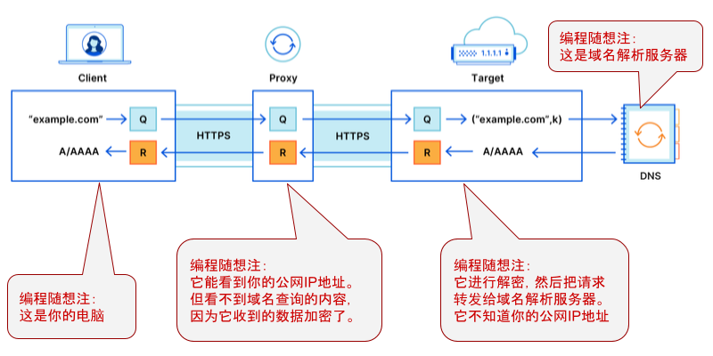

自从2019年初开始每季度发《近期安全动态和点评》，今天这篇的长度创记录了（确实有很多内容要聊）。
准备这篇汇总花了俺好几个晚上，再加上元旦假期要陪家人，最近10天都没有上线回复评论，很抱歉 :(
《房地产公司利用人脸识别，判断客户身份 @ Solidot》
很多天朝网民觉得“隐私泄漏无所谓”，他们真应该看看这篇报道。
“隐私保护”直接关系到【数十万】的购房差价——这就是【隐私的代价】！
《苹果服务器宕机，导致无数应用停止响应 @ Solidot》
《苹果 OCSP 事故暴露出它的不道德 @ Solidot》
《Jeffrey Paul：Your Computer Isn't Yours》
编程随想注：
上述这篇出自德国黑客 Jeffrey Paul（他同时也是苹果的老用户）。苹果的 OCSP 事故之后，此文在网上引起巨大反响，甚至引起了苹果官方的注意。
他的博客同时还配发了上述文章在不同语言的翻译。考虑到大部分读者不熟悉洋文，俺转贴了中译文（如下）
《你的电脑不属于你》
编程随想注：
苹果公司一直宣称“很注重用户隐私”。这样的鬼话，很多人竟然信了。希望这次的“OCSP 事故”能够引起某些人的反思。
此次“OCSP 事故”，有一个很多人吐槽的点——为啥 OCSP 的传输是【明文】？？？以苹果公司的研发实力，怎么会犯如此低级的错误？很多人不得不怀疑，这是有意的设计缺陷。如此一来，政府、ISP、CDN 都可以很容易监控苹果用户（知道他们在什么时间、什么地点、运行了哪种软件）。
此次事故之后，Apple 的官网宣布说：
这样的官方声明是【缺乏说服力】的。因为 Apple 的用户难以验证该公司所说的“不再记录 IP 地址”到底有没有落实。俺个人猜测：这只不过是敷衍用户的说辞，并让苹果用户获得某种虚假的安全感。
《Chrome 的网站数据设置豁免了 Google 旗下网站 @ Solidot》
Chrome 的【网站中立性】早就被质疑了，上一次是2018年（Chrome 69 版本发布时）。当时曝光了一个隐私丑闻，为此俺还专门写了一篇博文：《弃用 Chrome 改用 Firefox 的几点理由——关于 Chrome 69 隐私丑闻的随想》
考虑到某些读者比较健忘，把当年的那篇博文中的某段话摘录如下：
俺要再次提醒大伙儿：Google 绝大部分收入（90% 以上）来自于【在线广告】。为啥 Chrome 要想尽办法保留自家网站的 cookie 和本地数据捏？因为这样做更有利于 Google 收集你的行为。Google 对你的上网行为了解越多，就能更加精准地向你投放广告。Google 投放的广告越精准，它从广告客户那里收取的广告费就越多。
两次丑闻曝光之后，Google 官方都辩解说：这是软件开发过程中不小心引入的 bug（编程失误）。
看完俺上述的分析之后，你还会相信：这仅仅是一个 bug 吗？
《Zoom 一中国员工多次阻断纪念六四视频会议，遭到指控 @ BBC/英国广播公司》
《How Zoom violated its own terms of service for access to China's market @ MSNBC》
《How China's Tech Giants Like Alibaba, Tencent, and Baidu Aid Spy Agencies @ ForeignPolicy/外交政策》
从上述几篇报道可以看出——咱们朝廷之所以能胁迫很多大公司（包括欧美大公司），其谈判筹码在于——天朝庞大的市场。
多年来俺一直唠叨：“商业公司”与“非盈利组织”有本质性差异。其中一个差异就在于此——商业公司最终还是为了赚钱，更有可能屈服于【政治压力】。
《丹麦军方使用 XKEYSCORE 与 NSA 合作，监听国际通信电缆 @ Solidot》
《美德情报机构危及了瑞士中立的名声 @ Solidot》
《又一家瑞士加密设备公司被指与情报机构合作 @ Solidot》
再次提醒大伙儿——不论是在成熟的民主国家，还是在高度专制的国家，都要防范政府滥用公权力。
当年斯诺登曝光“棱镜门丑闻”时，俺支持他并反对美国国安局（NSA）的大规模监控。因为 NSA 滥用了公权力，并威胁了基本人权（基本自由）。
引申阅读：
《“对抗专制、捍卫自由”的 N 种技术力量》
《每周转载：EFF 创始人约翰·佩里·巴洛和他的【赛博空间独立宣言】》
《Tim Berners Lee 的创业公司发布面向企业的隐私平台 @ Solidot》
这位 Tim Berners-Lee 就是大名鼎鼎的【Web 它爹】。他开创了万维网（World Wide Web），并成立了“万维网基金会”，推动了 Web 的普及。
编程随想注：
去年（2020）12月曝光的 SolarWinds 供应链攻击事件，堪称历史上规模最大的一次。值得详细说一下。
整个故事很长，俺尽量长话短说。
在12月8日，著名的安全公司 FireEye 在其官方博客（这个链接）披露：遭遇国家级的黑客入侵。入侵者窃取了公司红队使用的渗透测试工具。（注：信息安全领域借用了军事术语，负责渗透测试的称作“红队/Red Team”，负责防御的称作“蓝队/Blue Team”）。
通过对入侵过程的追溯与分析，发现攻击者利用了 SolarWinds 的软件系统（在该软件系统中植入木马）。这个 SolarWinds 是一家美国公司，专门为大型企业和政府部门提供系统管理工具。很多政府部门及500强企业是其客户。
初期的调查发现：
攻击者入侵了 SolarWinds 官方的【升级服务器】，把服务器上的软件模块替换成木马。当那些 SolarWinds 的客户（大公司 ＆ 政府部门）升级 SolarWinds 的软件系统时，木马就不知不觉地进入企业内网。先植入的那个木马是个“下载器”，它会下载一个更高级的木马（带有远程控制功能）。攻击者通过这个更高级的木马进行远程手动操作，然后对企业内网作进一步的渗透。
某些懂安全的读者会问：升级服务器上的软件模块被替换之后，如何能顺利通过【校验】？
大致有如下几点：
1. SolarWinds 官方的升级服务器，防护措施很差（“升级服务器”位于【公网】上，照道理应该有很强的加固措施。可惜 SolarWinds 的管理很糟）
2. 升级服务器【没有】针对“文件完整性”进行安全审计，所以升级模块被替换掉之后，其服务器的网管并未察觉。
3. 入侵者替换掉的升级模块（木马）已经自带【数字签名】，所以这个木马在企业内运行时，也没被怀疑。
上述第3点引出了另一个疑问：一般来说，“升级服务器”只是用来提供下载滴，它上面【不】存储“用于生成数字签名的【私钥】”。那攻击者如何拿到私钥呢？
从理论上讲，至少有两种可能：
可能性之一，
攻击者不光入侵了 SolarWinds 的升级服务器，还彻底渗透了该公司的内网，并入侵“存放数字签名【私钥】的服务器”；一旦入侵者拿到私钥，自然可以制作“数字签名”。
可能性之二，
攻击者并【没】拿到“数字签名私钥”，而是渗透了软件开发团队的电脑，在源代码中植入后门。也就是说，在软件发布阶段，要制作数字签名的时候，软件本身已经含后门了。
进一步的调查发现：
入侵从前年（2019）的10月份就开始了。那时候攻击者就已经在 SolarWinds 某个软件的 dotNet 源代码中加了点料。一开始添加的是个“空类”（empty class，也就是“没啥功能的空代码”）。一直等到5个月之后（2020年3月份），入侵者才开始添加具有实质性功能的代码。而且攻击者添加的后门代码表现出很高的专业水准（参见微软安全博客的“SolarWinds 木马技术分析”）
上述这些反映出——
1. 攻击者能够修改代码，说明他们已经渗透到 SolarWinds 研发团队的网络；
2. 攻击者很谨慎——先在源代码中加个“空类”，看看这个行为是否被发现。如果5个月都没被发现，就说明 SolarWinds 开发团队根本没注意到这个改动；
3. 攻击者愿意花5个月时间等待和准备——说明他们对这次行动很重视，有很大的野心；
更进一步的调查发现：实际上有两波攻击者。为啥这么说捏？
SolarWinds 升级服务器上的木马有两种，一种自带数字签名，另一种【没】数字签名。
有数字签名的那种，就是俺刚才所说的：在2019年10月开始的攻击（通过修改源代码植入后门）。另一种木马【没有】数字签名，很可能是另一波攻击者入侵了升级服务器，直接替换了某个升级模块，所以他们没法制作数字签名。
对于第一批攻击者，很大可能是俄国的【御用骇客】。在 MSN 网站的“这篇报道”中提及：SolarWinds 的很多软件外包给【东欧】国家开发。一般来说，俄罗斯情报机构要想渗透东欧的软件公司，（相比“西欧/北美”而言）会容易得多。
就在前几天（2021年1月5日），美国联邦政府的多个部门（国家情报总监、国土安全部、FBI、NSA）联合发布正式声明（官方链接）。这几个部门一致认为：俄罗斯很可能是 SolarWinds 供应链攻击的幕后黑手。
现在的问题是：第二批攻击者是谁？
从攻击的手法和动用的资源来看，第二批攻击者多半也是【国家级】的御用骇客。会不会是咱们天朝捏？需要看进一步的调查，有没有新的发现。
虽然第二批攻击者还不太清楚，但第一批攻击者基本确定是俄国佬。这就引出了俺在2019年这篇博文警告过的一个风险——“网络战”在特定情况下可能会意外引爆【核战】。
这不是俺危言耸听，美国军方早就有类似的警告。而这次的 SolarWinds 事件再次凸显这类风险——在此次攻击中，被渗透的政府部门不仅包括【国防部 ＆ 国土安全部】，甚至还包括【核武器管理局】。相关报道如下：
《U.S. Nuclear Weapons Agency Hacked as Part of Massive Cyber-Attack @ TIME/时代周刊》
简单总结一下此事的经验教训。如果你在安全圈内混，或者你在软件公司从事管理岗位，可以思考一下俺总结的这几点。
教训1：单点故障
关于“单点故障”这个概念，俺已经唠叨很多次了，2015年还专门写过一篇博文《聊聊“单点故障”——关于“德国空难”和“李光耀”的随想》。
前面说了——SolarWinds 的客户很多，遍及全球500强以及很多美国联邦政府部门。因此它的网管系统就成为某个【单点】。而这家公司的安全意识又不够强（甚至可以说【很差】）。
一个被高度依赖的【单点】，本身却非常脆弱。后果可想而知。
教训2：内网防御
由于 SolarWinds 的系统管理软件部署到企业【内网】，攻击者借助 SolarWinds 木马直接就渗透到内网。
很多安全防御人员只重视“来自外网（公网）的威胁”，而轻视了来自【内部】的威胁。
套用一句老话：坚固的堡垒更容易从内部攻破。
教训3：物理隔离
既然说到“内网防御”，顺便说说“物理隔离”。对于【物理隔离】的内网，受 SolarWinds 木马的影响会小很多。
这里所说的“物理隔离”指的是【与公网隔离】，在这种内网里面，即使中了 SolarWinds 木马，该木马也【无法】被远程攻击者手动操控。
有些同学会问：“物理隔离”的情况下如何进行系统升级和软件升级捏？
其实很简单——
把内网划分为两个独立区域：“A区”可以连公网，“B区”是隔离的（不能连公网）。在“A区”搭建【升级镜像】（具体如何做，参见“这篇博文”），然后用某种【离线】的方式（比如移动硬盘）把“A区”的升级镜像复制“B区”。
如此一来，既可以确保“B区”始终与公网隔离，又可以正常升级“B区”的系统和软件包。
教训4：供应链
这个已经是最近几年的老话题了。好几篇《近期安全动态和点评》都聊过“供应链”的安全问题。
一个大型的企业或政府部门，其“供应链”会涉及非常多的环节，其依赖的软硬件会来自非常多不同的公司。类似于【木桶原理】，只要有一个环节是短板，攻击者就容易从该环节突破。
教训5：公司管理
SolarWinds 自家的软件是【闭源】。对于这类软件，只能依靠本公司的程序员进行【代码安全审计】。
“代码安全审计”的工作性质比较特殊——需要依赖经验丰富的程序员（既懂编程又懂安全的老手）。而这种编程老手的【人力成本】是很高滴。很多公司为了省钱（节省人力资源），不太可能安排足够多的编程老手去审计本公司的代码。
也就是说，这本质上是一个【管理】层面的问题。
《Massive, China-State-Funded Hack Hits Companies Around the World, Report Says @ Slashdot》
《中国黑客组织以日本公司为攻击目标 @ Solidot》
上述2篇都提及了【Zerologon】这个漏洞（编号
俺在上一季度的《近期安全动态和点评（2020年3季度）》中提到了该漏洞——当攻击者渗透到内网之后，可以利用该漏洞搞定整个 Active Directory 的【域控制服务器】（洋文叫“Domain Controller”，简称 DC）。一旦入侵者控制了 DC，就可以玩很多花样啦。
《NSA Lists 25 Vulnerabilities Currently Targeted by Chinese State-Sponsored Hackers @ Security Week》
编程随想注：
上述这篇报道列出了天朝御用骇客近期最偏爱的25个高危漏洞，其中有很大比例的企业级应用系统的漏洞（IT 公司的运维人员和系统管理人员要当心这些）
至于普通的网友，则要多留意操作系统和浏览器的高危漏洞。
《Identifying and protecting against the largest DDoS attacks @ Google Cloud Blog》
编程随想注：
在 Google 披露【之前】，史上最强的 DDoS 攻击发生在2016年，来自“Mirai 僵尸网络”，由“匿名者”黑客组织发动。
而 Google 近期（2020年10月）公布的2017年 DDoS 攻击，其规模是“Mirai DDoS”的4倍，关于这次攻击的峰值流量，Google 官方博客说：
当然啦，Google 也借机炫耀说：2017年那次创纪录的 DDoS 攻击，对其网络基础设施毫无影响。
在多年前的一篇博文中，俺曾经解释过：为啥长期使用 Google 的博客平台（blogspot）？其中一个很重要的原因是：Google 的服务器集群确实牛逼，能抵御【国家级】的 DDoS 攻击。
很多反共网站都曾经被中共的御用骇客用 DDoS 的方式干趴下，但那些搭建在 blogspot 博客平台的反共网站一直【未受】影响。原因就在于此。
（前几天正好有读者在反馈这个现象，借本文顺便说一下）
在去年（2020）的 VirusTotal 教程中，俺曾经说过：有些【国产】的杀毒软件会故意把【翻墙工具】当成病毒。这其中的道理很简单——朝廷不希望网民翻墙，于是维稳系统就向【国产】杀毒软件厂商施加压力，让它们把翻墙工具加入到“病毒特征库”。
同样的道理，朝廷不希望网民访问境外的【反共网站】，于是就向【国产】浏览器厂商施压，让这些厂商把反共网站标注为“恶意网站”。由于俺长期写反党反共的政治博文，本博客自然会被维稳系统关照。从某种意义上讲，维稳系统越关心俺，说明本博客的影响力越大 :)
另外，有热心读者在评论区反馈：【国行版】iPhone 内置的“恶意网站列表”由【腾讯】提供。也就是说，如果你用【国行版】iPhone 内置的 Safari 浏览器访问俺的博客，有可能也会看到“欺诈网站的警告”——这是因为腾讯在搞鬼。
以下是苹果公司官方的声明（引用出处在“这里”）。请注意俺标注粗体的部分。
《微软将强行用 Edge 而不是 IE 打开部分网站 @ Solidot》
总体而言，是个好消息。IE 实在太烂，早就该滚蛋了。但俺要提醒大伙儿：虽然微软开始终结 IE，但 IE 不会很快消失，IE 的安全风险也不会很快消失。
很多网民有个【误解】：以为不用 IE 上网，就不用担心 IE 的安全漏洞。
为啥说这是个【误解】捏？因为 Windows 的很多核心组件是跟 IE 内核密切捆绑的。比如说：“资源管理器”会用到 IE 内核的某些功能。只要 IE 的核心组件依然被 Windows 使用，IE 的安全风险就依然存在。
IE 的代码相当烂，其安全漏洞相当多（正是因为 IE 太烂了，微软才另起炉灶搞了全新的 Edge 浏览器）。所以，只要 IE 组件还留在 Windows 系统中，对整个系统就是个隐患。
《Flash Player 将在 Windows 上停止工作 @ Solidot》
《Windows 10 更新永久移除 Adobe Flash @ Solidot》
这也是个好消息。因为 Flash Player 如同 IE，也是一个【高危漏洞专业户】。
Adobe 早就宣布了 Flash 的死期（2020年12月31日），如今终于过了。
由于 Flash 流行了将近20年，网上出现了很多基于 Flash 的动画作品和游戏作品。如今 Flash Player 已死，如果你还想看这些 Flash 作品，可以参考如下这篇报道：
《互联网档案馆存档 Flash 动画和游戏 @ Solidot》
《Why Apple, Cloudflare, and Fastly Proposed a New Privacy-Focused DNS Standard Called 'Oblivious DoH' @ Slashdot》
《Cloudflare and Apple Design a New Privacy-Friendly Internet Protocol @ Slashdot》
编程随想注：
“Oblivious DoH”简称“ODoH”，是对 DoH（DNS over HTTPS）的进一步改进。不了解啥是 DoH 的同学，可以看如下这篇教程：
《对比4种强化域名安全的协议——DNSSEC，DNSCrypt，DNS over TLS，DNS over HTTPS》
DoH 虽然可以对抗“网络嗅探”和“域名污染”，但依然有一个小小的缺点——
因为你要向“域名解析服务器”查询域名。如果你【没】走代理，“域名解析服务器”当然会知道：某个公网 IP 发起了某个域名的查询请求（因此， “域名解析服务器”就会猜到你正在访问哪些网站）。
为了进一步消除上述隐私风险，Cloudflare、Fastly、Apple 合作搞了个“Oblivious DoH”。从网络拓扑上看，ODoH 相比 DoH 增加了【2个中间节点】，从而使得“域名解析服务器”无法知道是哪个公网 IP 发起 DNS 查询请求。而且用户可以通过设置，让“新增的中间节点”与最终的“域名解析服务器”分属不同公司（以避免这几个节点串通）。
具体原理看下面这张图。更详细的介绍参见 IETF 官网的“协议草案”。
Mozilla 已经表态：要在未来的 Firefox 版本中支持“Oblivious DoH”。

（Oblivious DoH 原理示意图）
《Firefox 83 引入 HTTPS-Only 模式 @ Solidot》
有些同学会问：这个“HTTPS-Only 模式”与“HTTPS Everywhere 扩展”有啥差别捏？
可以看 ghacks 网站的“这篇文章”。
《Firefox 开始测试网站隔离功能 @ Solidot》
在“网站隔离”方面，Firefox 的开发进度远远慢于 Chrome/Chromium。虽然俺推荐 Firefox，但也必须承认它在功能方面有一些不足之处。
《Servo 成为 Linux 基金会托管项目 @ Solidot》
挂靠到 Linux 基金会之下，Servo 项目短期内不用太担心生存问题。
俺对 Servo 项目还是寄予很大期望——用 Rust 语言重写一个浏览器引擎，对改善浏览器的攻击面，有很大帮助。
《Chrome will soon have its own dedicated certificate root store @ ZDNet》
编程随想注：
Chrome/Chromium 正在考虑引入【独立的】“CA 证书体系”。对关注安全性的 Chrome/Chromium 用户而言，这是个好消息。
到目前为止，Chrome/Chromium 采用的是“操作系统的 CA 证书”。这个做法的【缺点】在于——如果你在同一个操作系统中创建了多个 Chrome 的实例，由于这些实例都采用操作系统的 CA 证书，所以这些实例看到的 CA 证书都是完全一样的。也就是说，在【同一个系统】的多个 Chrome 实例，【没法】搞“证书白名单”这种防御措施。
相比之下，Firefox 采用独立的（自带的）CA 证书体系。因此，你可以在同一个系统创建多个 Firefox 实例，并通过定制，使得这些实例的证书各不相同。于是就可以玩“证书白名单”这个招数。
引申阅读：
关于“CA 证书”的扫盲，参见博文《数字证书及 CA 的扫盲介绍》。
关于【证书白名单】这种安全加固方法，参见“这篇博文”的介绍。
《哈萨克斯坦再次尝试拦截 HTTPS 流量 @ Solidot》
这已经是哈萨克斯坦政府【第二次】干这种破事儿了。第一次是在2019年7月，当时俺在《近期安全动态和点评（2019年3季度）》点评过了。把当时写的内容再转贴如下：
《Google releases Chrome security update to patch actively exploited zero-day @ ZDNet》
编程随想注：
上述这篇提到的 Chrome 高危漏洞位于“FreeType 字体渲染库”（编号
Firefox 也使用了 FreeType 这个库，也有此漏洞。但根据 Mozilla 官方的说法，只有 Linux 平台（含 Android）的 Firefox 受影响，而且在默认配置下【不会】触发该漏洞。因此该漏洞在 Firefox 修复列表中标注为中等级别。
从技术上讲，攻击者可以构造某个恶意的网页，该网页引用了某个精心构造的字体文件，当 Chrome 浏览器加载该网页并用 FreeType 库渲染该字体的时候，触发攻击代码。
假如你很注重安全性，为了更彻底地消除【字体】导致的攻击面，你可以定制浏览器，禁止在 Web 页面中加载外来的字体。
对 Firefox 的深度定制，可以参考教程《扫盲 Firefox 定制——从“user.js”到“omni.ja”》；对其它浏览器的深度定制，俺暂时还没写过教程。
《Google 修复了两周内的第二个 Chrome 0day 漏洞 @ Solidot》
《安全人员发现七款手机浏览器易遭地址栏欺骗攻击 @ cnBeta》
《Google Project Zero 披露正被利用的 Windows 0day 漏洞 @ Solidot》
（再次唠叨）前一个小节提到的
攻击者正在组合运用
《微软释出补丁修复112个安全漏洞 @ Solidot》
俺老是说 Windows 的安全性靠不住，总有些微软的粉丝不肯承认。
请微软粉丝看看上述这篇报道。单单去年（2020）11月的例行更新——112个安全漏洞，其中17个为高危级。够吓人吧？而且其中有些漏洞在补丁还没出现之前，就已经被广泛利用了。
《黑客正尝试利用 Zerologon 向尚未打补丁的服务器植入后门 @ Solidot》
这个 Zerologon 漏洞，前面的章节已经点评过了，此处不再重复。
《Google and Intel Warn of High-Severity Bluetooth Security Bug In Linux @ Slashdot》
《Google 和英特尔警告 Linux 高危蓝牙漏洞 @ Solidot》
多年来俺就一直唠叨，对重要的（敏感的）设备，尽量【不】启用无线网络协议（当然也包括蓝牙）。
很多天真的读者会【误以为】：蓝牙协议的物理覆盖范围很小，攻击者不可能在这么近的距离发起蓝牙攻击。
实际情况往往比想象的更复杂——比如攻击者先用其它方式搞定了你的某个蓝牙设备，然后以这个蓝牙设备作为跳板，再组合上述漏洞，从而对你的某个开启了蓝牙的 Linux 主机进行入侵。
《DHS Is Looking Into Backdoors In Smart TVs By China's TCL @ Slashdot》
《TCL 的 Android 智能电视曝出允许远程控制的漏洞 @ Solidot》
编程随想注：
基于“国家安全”的理由，美国继续加强对中国企业的制裁。以下是相关报道：
《中芯国际被美国防部列入黑名单，特朗普继续施压 @ BBC/英国广播公司》
《特朗普签署行政令禁用支付宝等中国应用 @ FT/金融时报》
《特朗普政府考虑将阿里巴巴和腾讯纳入禁止投资中资股名单 @ Solidot》
《突发！纽交所将按照特朗普政府行政令「摘牌」中国三大运营商 @ 网易》
《纽交所：停止推进中国三大电信运营商摘牌 @ 德国之声》
《纽交所再翻转决定，中国三大电信商将被摘牌 @ BBC/英国广播公司》
《巴西政府支持美国“清洁网络”计划，但业界不愿意剔除华为 @ 路透社》
《瑞典法院驳回华为上诉，德国大幅提高华为参与门槛 @ RFI/法广》
《Microsoft Urges Users To Stop Using Phone-Based Multi-Factor Authentication @ Slashdot》
编程随想注：
所谓的“双因素认证”，洋文叫做 2FA 或 MFA。简而言之就是：在密码的基础上再增加一种身份验证的机制。相当于某种“双保险”，可以增加攻击者的难度。
这篇报道指出：基于【电话网络】（比如“短信、语音”）的“双因素认证”是【不】可靠滴。因为现有的移动通讯网络，其协议很脆弱，容易被拦截。
《Baidu's Android Apps Caught Collecting Sensitive User Details @ Slashdot》
《百度应用收集用户敏感数据被 Google 短暂下架 @ Solidot》
《三星手机让香港澳门用户使用中国大陆的 DNS 服务 @ Solidot》
《The Police Can Probably Break Into Your Phone @ Slashdot》
编程随想注：
上述报道说的是美国，但咱们天朝的情况也差不多。如今天朝警方已经普遍装备了【手机取证软件】。而且天朝也有很多安全公司在研究：如何突破手机的防护。
俺已经唠叨无数次，【不要】在手机上进行高度敏感的活动。
手机在数据加密方面的【完备性】不可能达到桌面 PC 的那种程度。这与手机厂商的技术水平【无关】，而是由手机本身的特性决定的。
《苹果让50个应用豁免防火墙 @ Solidot》
这种做法确实很奇怪。俺想听听 Apple 官方如何解释这个做法。
《AMD Radeon 图形驱动占到了内核的 10.5% @ Solidot》
Linux 内核属于【宏内核】架构。再加上它的功能越来越多，其攻击面相当可观。俺的建议是：
建议1
不要急于用最新版本的内核，应该使用生命期【尚未】结束的“长期支持版本”（LTS 版本）。
LTS 版本的【好处】在于——只修复 bug，不增加新功能。因此，LTS 内核的“bug 变化趋势”类似于单调递减函数。（借用软件工程的术语）在此种场景下，bug 数收敛得更快。
另外，从统计学的角度来讲，维护时间越久的 LTS，尚未发现的 bug 数就越低。
建议2
学会裁剪内核（注：裁剪内核有几种方式，“重编译内核”只是其中之一）
有空的话，俺写篇教程聊聊“如何裁剪内核”。
《勒索软件黑帮声称获得了育碧和 Crytek 的内部数据 @ Solidot》
《曼联遭勒索软件攻击两周后仍未完全恢复 @ Solidot》
3年前（2017）发过一篇《勒索软件是骇客攻击的新趋势，兼谈防范措施及各种误解》。当年俺就预见了——这是网络入侵者的【新趋势】。
关键在于：“勒索软件”这种形式可以获得巨大的经济收益。在经济利益的驱动下，自然有人去研究越来越高级的勒索软件。而且这种高级的勒索软件，通常是用来对付【企业用户】。因为“企业用户”（相比“个人用户”）可以支付更高的赎金。
为了获得更多的钞票，勒索软件背后的“数字化黑帮”开始玩【二次勒索】的把戏。
所谓的【二次勒索】指的是：勒索软件不光加密受害人的硬盘数据，还【窃取】受害人的数据。
受害人第1次支付赎金是为了获得“解密硬盘数据的密钥”；而受害人第2次支付赎金相当于“封口费”。如果受害人不肯支付第2笔赎金，勒索黑帮会威胁把受害人的某些敏感且私密的数据曝光到互联网上。
《Windows 勒索软件被发现移植到 Linux 平台 @ Solidot》
这篇报道反映了另一个新趋势——勒索软件的作者开始关注 Linux 平台。
刚才俺说了：【企业用户】更有钱，能支付更多的赎金。而企业用户的命根子是它内部承载业务数据的服务器。在这些服务器中，Linux 占了相当的比例。
《广告屏蔽扩展被出售之后变成恶意程序 @ Solidot》
《GitHub-hosted malware calculates Cobalt Strike payload from Imgur pic @ Bleeping Computer》
编程随想注：
10年前（2011）俺写过一篇《用图片隐藏信息的技术实现》。其中提到了“隐写术”（洋文叫做 Steganography）。
通俗地说，用某种特定的密码学算法（隐写算法）把信息隐藏到一张普通的图片中，只有用同样的算法才能把信息从图片中提取出来。如果别人不知道相应的隐写算法，无法判断图片中是否隐含了信息。
如今，恶意软件开始采用这种手法来规避杀毒软件的【在线扫描】。
（考虑到某些读者不太了解高级木马的原理，稍微解释一下）
有些高级的木马具有【升级功能】，会从木马主人控制的服务器上下载升级包。但这种方法容易暴露木马主人控制的服务器，而且也容易被杀毒软件察觉。
为了隐藏自身的网络流量和下载行为，某些高级木马就伪装成“从图床网站下载图片”，然后再用“隐写算法”从图片中解密出木马所需的升级信息。由于很多知名网站的图片都托管在【图床网站】，从这类网站下载图片，不会引起杀毒软件的注意。而且还可以规避企业中部署的安全审计工具。
《Windows Update can be abused to execute malicious programs @ Bleeping Computer》
编程随想注：
wuauclt.exe 是 Windows 自带的系统升级工具的命令行程序。它有个功能：在命令行参数中指定某个动态库（dll），wuauclt.exe 会加载该 dll 并执行 dll 的某个导出函数。
安全研究人员指出：攻击者可以用这个方式，让 wuauclt.exe 加载某个【恶意 dll】，从而绕过安全检测。因为 wuauclt.exe 是系统自带的，其自身也带有微软的数字签名。很多杀毒软件会把 wuauclt.exe 列入白名单（也就不会去怀疑该程序的可疑行为）。
编程随想注：
半年前，推特遭遇史诗级的“帐号劫持攻击”。俺在《近期安全动态和点评（2020年3季度）》中聊过此事。
如今调查报告出来了——典型的【社会工程学】攻击手法。
《Twitter 黑客攻击调查报告 @ Solidot》
《Intel 发布 CSME 安全白皮书 @ Solidot》
《AMD、英特尔和高通支持微软的 Pluton Security 处理器 @ Solidot》
《AWS 雇佣 Rust 编译器团队负责人 Felix Klock @ Solidot》
最近2年的《近期安全动态和点评》，但凡说到“安全编程”这个话题，大部分都与 Rust 有关。
上述这篇表达了亚马逊对 Rust 语言的热情。另外，在《近期安全动态和点评（2020年2季度）》的某篇报道中引用了微软云计算负责人的话：
也就是说，云计算三大巨头中，已经有两个热情拥抱 Rust 编程语言。至于另外一个巨头 Google，对 Rust 的热情一直不高。俺个人猜测：Google 更器重它的亲儿子 Go 语言。Go 与 Rust 的定位存在一定程度的重叠，从某种意义上，两者有竞争关系。
《暗网市场的群体动力学 @ Solidot》
从上述研究论文可以看出：“暗网市场”具有很强的【自适应】能力。俺在“这篇博文”中介绍了“复杂性科学”的一个重要概念 CAS（复杂自适应系统）。如今的“暗网市场”是一个典型的 CAS。它【不】需要依靠某种宏观的规划，也【不】需要依赖任何“中央式”的协调中枢，却可以在环境的剧烈变动中保持稳定性和健壮性。
为了避免误解，有必要声明一下：
“暗网市场”上充斥的很多犯罪活动，是俺极力反对的。俺引述这篇报道只是想让读者多思考【CAS】相关的概念。前面章节提到了《赛博空间独立宣言》。要想构造一个不受任何政府控制的“赛博空间”，这个空间本身必须是 CAS——当它具备了【自适应性】，它才有可能具备【独立性】。
引申阅读：
对 CAS 这个主题感兴趣的读者，可以参考电子书清单中的《隐秩序——适应性造就复杂性》这本书。
俺博客上，和本文相关的帖子（需翻墙）：
《“对抗专制、捍卫自由”的 N 种技术力量》
《每周转载：EFF 创始人约翰·佩里·巴洛和他的【赛博空间独立宣言】》
《扫盲 DNS 原理，兼谈“域名劫持”和“域名欺骗／域名污染”》
《对比4种强化域名安全的协议——DNSSEC，DNSCrypt，DNS over TLS，DNS over HTTPS》
《弃用 Chrome 改用 Firefox 的几点理由——关于 Chrome 69 隐私丑闻的随想》
《在线查毒工具 VirusTotal 的 N 种玩法——从“误报/漏报”聊到“攻击者对它的利用”》
《勒索软件是骇客攻击的新趋势，兼谈防范措施及各种误解》
《数字证书及 CA 的扫盲介绍》
《用图片隐藏信息的技术实现》
《“政治体制”与“系统健壮性”——基于“复杂性科学”的思考》
《近期安全动态和点评（2020年3季度）》
《近期安全动态和点评（2019年3季度）》
《近期安全动态和点评（2019年1季度）》
准备这篇汇总花了俺好几个晚上，再加上元旦假期要陪家人，最近10天都没有上线回复评论，很抱歉 :(
★隐私保护
◇人脸识别
《房地产公司利用人脸识别，判断客户身份 @ Solidot》
南方都市报报道，多家房地产公司的售楼处利用人脸识别识别客户身份，并据此给出不同的报价。编程随想注：
一位中介称，每当新楼盘上市时，房企一方面会花大量费用做营销宣传，吸引潜在购房者，另一方面也会找各种卖房平台作为“分销渠道”，让渠道帮忙招徕客户。如果购房者是看了房企宣传前来买房，叫做“自然到访客户”，说明房企的营销费没白花；如果购房者被渠道中介带上门，就属于“渠道客户”，房企要给予中介一定的“好处费”，即提成佣金。过去，房企销售与渠道中介抢客户的“混战”经常发生。而人脸识别，就是为了帮助房企判断某个购房者是什么类型、是谁的客户，佣金应该发给谁。
报道称，没有被系统记录下来的首次到访客户其下单的房屋售价最低可以便宜【数十万元】。
很多天朝网民觉得“隐私泄漏无所谓”，他们真应该看看这篇报道。
“隐私保护”直接关系到【数十万】的购房差价——这就是【隐私的代价】！
◇苹果 OCSP 事故——曝光重大的隐私丑闻
《苹果服务器宕机，导致无数应用停止响应 @ Solidot》
大批苹果用户在社交媒体上报告，他们的应用程序失去响应或需要数分钟时间才能启动运行。受影响的服务还包括 Apple Pay、Messages 和 Apple TV 设备。
导致这一大规模故障的罪魁祸首是苹果验证应用可信的公证服务器 ocsp.apple.com。OCSP 代表 Online Certificate Status Protocol stapling，从 MacOS Catalina 起，苹果用户每次打开或执行一个程序，系统都会将其哈希值发送到该服务器（苹果知道你运行的任何程序），在获得回应前应用程序会保持冻结状态。如果苹果设备没有联网，那么系统将会认为你离线，允许程序执行。今天发生的问题是 ocsp.apple.com 能 ping 通但无回应，于是系统一直尝试验证然后超时。对这一问题，苹果尚未发表声明。
《苹果 OCSP 事故暴露出它的不道德 @ Solidot》
11月中旬，苹果用户报告应用程序失去响应或需要数分钟时间才能启动运行。问题是苹果 OCSP（Online Certificate Status Protocol）服务器宕机导致的，此事暴露出苹果会收集用户在苹果系统启动的每一个应用程序的信息。苹果随后承诺停止记录用户 IP 地址，将确保所有任何收集的 IP 地址从日志里移除，明年将提供关闭的选项。
自由软件基金会对这起事故发表文章称，苹果的做法在道德上是不可接受的，认为无法确保苹果是否值得信任，是否能真正改进隐私保护，因为 OCSP 系统的基础是关于征服而不是安全。FSF 建议苹果用户转移到 GNU/Linux，因为选择自由而不是选择企业独裁主义是重新获得数字自主权控制自己的计算机的最重要一步。
《Jeffrey Paul：Your Computer Isn't Yours》
编程随想注：
上述这篇出自德国黑客 Jeffrey Paul（他同时也是苹果的老用户）。苹果的 OCSP 事故之后，此文在网上引起巨大反响，甚至引起了苹果官方的注意。
他的博客同时还配发了上述文章在不同语言的翻译。考虑到大部分读者不熟悉洋文，俺转贴了中译文（如下）
《你的电脑不属于你》
你的电脑不属于你
事实就是这样，你注意到了吗？
当然，我指的是 Richard Stallman 在1997年预言的，并且 Cory Doctorow 也警告过我们的那个世界。
用现代的 macOS，即使你只是想简单地接通电源开机，启动一个文本编辑器或者电子书阅读器，然后随便读读写写，也没法避免你的行动被记录被存储。
在当前版本的 macOS 中，当你运行每一个程序时，系统都会给苹果公司发送一个哈系值（hash，唯一标识符）。很多人并没有意识到这一点，因为它是无声无息的，看不见的，而且当你离线时它马上就会悄悄地失效。不过今天的服务器速度是真的很慢，以至于它没办法走那条快速失效的路径，导致大家如果连着网就无法启动应用。
因为这件事是联网的，服务器自然就会看到你的 IP 地址，并且知道请求是什么时间进来的。有了 IP 地址，服务器就可以在城市级或者 ISP 级粗略地得到你的地理定位，而且可以做个这样的数据表：
日期，时间，计算机，ISP，城市，州，应用哈系值
当然，苹果（或其他任何人）可以计算这些常见程序的哈希值：App Store、Creative Cloud、Tor 浏览器、破解或逆向工程用的工具等一切程序。
这意味着，苹果知道你什么时候在家，什么时候在工作。也知道你在哪里打开什么应用，以及打开的频率。他们知道你在朋友家的 Wi-Fi 上什么时候打开了 Premiere，也知道你在去别的城市旅行途中的什么时候在某个酒店里打开了 Tor 浏览器。
“谁在乎呢？”我听到你在问。
好吧，这不仅仅是苹果公司。这些信息不会只留在他们那里。
- 这些 OCSP 请求是在未加密的情况下传输的。每个能监控到网络流量的人都能看到这些信息，包括你的 ISP 和任何窃听他们电缆的人。
- 这些请求会进入一家叫做 Akamai 的公司运营的第三方 CDN。
- 自2012年10月以来，苹果公司就一直是美国军事情报界的棱镜计划的合作伙伴。该计划允许美国联邦警察和军方在没有搜查令的情况下，只要想就可以不受限制地获取这些数据。2019年上半年，他们就这样做了超过18000次，在2019年下半年又做了17500多次。
这些数据相当于一个关于你的生活和习惯的巨大数据库，并让拥有所有数据的人能够识别你的运动和活动模式。对于一些人来说，这甚至会对他们的身体造成危险。
......
（注：全文很长，俺只摘录到这里。此文末尾有一个 FAQ 问答环节。如果你是苹果用户，建议去看看这个 FAQ）
编程随想注：
苹果公司一直宣称“很注重用户隐私”。这样的鬼话，很多人竟然信了。希望这次的“OCSP 事故”能够引起某些人的反思。
此次“OCSP 事故”，有一个很多人吐槽的点——为啥 OCSP 的传输是【明文】？？？以苹果公司的研发实力，怎么会犯如此低级的错误？很多人不得不怀疑，这是有意的设计缺陷。如此一来，政府、ISP、CDN 都可以很容易监控苹果用户（知道他们在什么时间、什么地点、运行了哪种软件）。
此次事故之后，Apple 的官网宣布说：
为了进一步保护隐私，我们已停止记录与开发者 ID 证书检查相关联的 IP 地址，并将确保从日志中移除所有收集到的 IP 地址。
这样的官方声明是【缺乏说服力】的。因为 Apple 的用户难以验证该公司所说的“不再记录 IP 地址”到底有没有落实。俺个人猜测：这只不过是敷衍用户的说辞，并让苹果用户获得某种虚假的安全感。
◇Chrome 浏览器的“网站中立性”再次被质疑
《Chrome 的网站数据设置豁免了 Google 旗下网站 @ Solidot》
一位扩展开发者注意到，在 Chrome 的“Cookie 和网站数据”设置中，用户可以启用“关闭 Chrome 时删除 Cookie 与网站数据”。但在启用该选项之后，Google 旗下网站如搜索和 YouTube 的数据在关闭之后并没有删除。他对其进行了一番测试，在没有登陆 Chrome 或任何 Google 服务的情况下 YouTube 等 Google 服务的数据在浏览器关闭之后仍然保留了，也就是说 Google 旗下网站默认豁免于用户设置。Google 的做法再次引发了争议。编程随想注：
Chrome 的【网站中立性】早就被质疑了，上一次是2018年（Chrome 69 版本发布时）。当时曝光了一个隐私丑闻，为此俺还专门写了一篇博文：《弃用 Chrome 改用 Firefox 的几点理由——关于 Chrome 69 隐私丑闻的随想》
考虑到某些读者比较健忘，把当年的那篇博文中的某段话摘录如下：
这个丑闻是这样滴：对比2018年的丑闻，两次的性质非常相似——都是 Chrome 区别对待 Google 自家的网站（尽可能保留自家网站的 cookie 和本地数据）。
当你在 Chrome 69 版本上使用【清空所有 cookie】这个功能的时候，其它网站下的 cookie 确实被清空了；但是，Google 域名下的 cookie 被悄悄地保留了下来。
俺要强调一下：这绝对不是一个意外引入的 bug；恰恰相反，这是一个【有意实现】的功能。
由于 Chrome 悄悄地保留了 Google 相关域名的 cookie，这就意味着——即使在你清空了所有 cookie 之后，一旦你通过 Chrome 使用 Google 的服务，Google 的服务器依然知道你是谁（依然可以把“你之后的行为”与“你之前的身份”关联起来）。
Chrome 的这个隐私丑闻，说白了就是——Chrome 缺乏【网站的中立性】。
【网站的中立性】理应是任何一个浏览器最起码的要求——通俗地说，浏览器对所有的网站都应该是一视同仁的。
但由于 Chrome 本身是 Google 开发的，而 Google 本身又提供了大量的网络服务。在这种情况下，Chrome 就很难再做到【网站中立性】了。
俺要再次提醒大伙儿：Google 绝大部分收入（90% 以上）来自于【在线广告】。为啥 Chrome 要想尽办法保留自家网站的 cookie 和本地数据捏？因为这样做更有利于 Google 收集你的行为。Google 对你的上网行为了解越多，就能更加精准地向你投放广告。Google 投放的广告越精准，它从广告客户那里收取的广告费就越多。
两次丑闻曝光之后，Google 官方都辩解说：这是软件开发过程中不小心引入的 bug（编程失误）。
看完俺上述的分析之后，你还会相信：这仅仅是一个 bug 吗？
◇【中国】政府的审查及网络监控
《Zoom 一中国员工多次阻断纪念六四视频会议，遭到指控 @ BBC/英国广播公司》
美国司法部对一名前 Zoom 公司的员工提出起诉，罪名是协助中国政府破坏一系列和“纪念六四”有关的视频会议。
美国司法部指控 Xinjiang Jin （又名 Julien Jin，指控未提及中文名）在今年5月至6月期间至少四次阻断身在美国的人参加的会议。Jin 曾是 Zoom 在中国的一名员工。
美国司法部已经发出逮捕令。Zoom 表示将配合政府行动。中国方面尚未对此事作出评论。
......
《How Zoom violated its own terms of service for access to China's market @ MSNBC》
......
北京长期利用市场准入来迫使外国科技公司满足其审查要求，无论这种审查针对的是中国还是国外。
苹果已经从中国区的 App Store 中删除了数百个虚拟专用网（VPN）应用。在2019年，它还从 App Store 中删除了香港亲民主抗议者广泛使用的地图应用程序。LinkedIn 则审查了中国用户批评政府的内容。从（本文前面的）起诉中可以看出，Zoom 担心如果不终止（纪念六四的）会议或暂停相关帐户，那么它在中国的业务随时可能被关闭，而这个业务在其高层决策中占了很大比重。
可以理解的是，公司希望进入中国庞大的市场，但它们也有责任根据《联合国企业与人权指导原则》尊重人权。 Zoom 公开宣称其宗旨是“致力于自由和开放的思想交流”，但是当 Zoom 的员工 Jin 把“批评中国政府的言论”视作“非法活动”并对其进行审查时，他没有遇到任何阻力，也没有遭到总部同事的任何疑问。
......
《How China's Tech Giants Like Alibaba, Tencent, and Baidu Aid Spy Agencies @ ForeignPolicy/外交政策》
......编程随想注：
Beijing's access to, and ability to sift through, troves of pilfered and otherwise obtained data “gives [China] vast opportunities to target people in foreign governments, private industries, and other sectors around the world—in order to collect additional information they want, such as research, technology, trade secrets, or classified information,” said William Evanina, the United States' top counterintelligence official. “Chinese technology companies play a key role in processing this bulk data and making it useful for China's intelligence services,” he said.
In what amounts to intelligence tasking, China's spy services order private Chinese companies with big-data analytics capabilities to “condition”—that is, work up or process—massive sets of information, including from hacks like the massive breach of the U.S. Office of Personnel Management (OPM), that have intelligence value, according to current and former officials. This data then promptly flows back to Chinese state entities, they say.
“Just imagine on any given day, if NSA and CIA are collecting information, say, on the [Chinese military], and we could bring back seven, eight, 10, 15 petabytes of data, give it to Google or Amazon or Microsoft, and say, ‘Hey, condition this on the weekend. We want all these analytics; get it back to us next week.’ That's what they do. They have Alibaba and they have Baidu. We don't have that,” a current senior intelligence official said.
......
从上述几篇报道可以看出——咱们朝廷之所以能胁迫很多大公司（包括欧美大公司），其谈判筹码在于——天朝庞大的市场。
多年来俺一直唠叨：“商业公司”与“非盈利组织”有本质性差异。其中一个差异就在于此——商业公司最终还是为了赚钱，更有可能屈服于【政治压力】。
◇【美国】政府的网络监控
《丹麦军方使用 XKEYSCORE 与 NSA 合作，监听国际通信电缆 @ Solidot》
丹麦军方情报机构被控使用 XKEYSCORE 与 NSA 合作监听国际通信电缆以收集外国情报。1990年代，NSA 发现经过哥本哈根的通信电缆包含了来自中国和俄罗斯等国的电话呼叫、电子邮件和短信，但没有丹麦的帮助监听通信电缆是几乎不可能的。因此 NSA 请求丹麦情报机构提供帮助，但这一请求遭到了拒绝。美国没有放弃，当时的总统克林顿直接致函丹麦首相 Poul Nyrup Rasmussen，致力于与美国建立亲密关系的首相同意了。为了确保监听尽可能的合法，丹麦政府还寻求运营通信的私营公司请求批准监听，而该公司同意了。
《美德情报机构危及了瑞士中立的名声 @ Solidot》
《华盛顿邮报》和德国 ZDF 今年初披露，制造加密设备的瑞士公司 Crypto AG 数十年来已被 CIA 和西德的情报机构秘密控制。Crypto AG 的加密设备被世界多个国家广泛用于保护通信安全，通过秘密控制 Crypto AG 纂改加密设备美德情报机构能更容易的破解加密信息。瑞士议会公布的报告称，通过利用瑞士公司作为一个全球间谍行动的平台，美德情报机构危及了瑞士中立的名声。
瑞士自1815年以来一直保持中立，即使二次世界大战也是如此。对 Crypto AG 的秘密控制被 CIA 形容是情报界的世界政变。瑞士议会的报告承认，政府实际上早就知道此事。瑞士情报机构在1993年指出 Crypto AG 已经隶属于外国情报机构，出口存在漏洞的设备。瑞士情报机构被认为与 CIA 达成了正式协议分享情报。
《又一家瑞士加密设备公司被指与情报机构合作 @ Solidot》
在 Crypto AG 之后又一家瑞士加密设备公司被指与美国情报机构合作。编程随想注：
瑞士公司 Omnisec 是 Crypto AG 的主要竞争对手，成立于1987年，生产语音、传真和数据加密设备。加密专家 Ueli Maurer 教授曾是 Omnisec 的顾问，他透露美国情报机构 NSA 在1989年通过他接触了 Omnisec。该公司的 OC-500 系列设备出售给了多家瑞士联邦机构，而瑞士当局直到2000年代中期才知道这些设备是不安全的。多家瑞士公司购买了这些纂改过的设备，其中包括瑞士最大的银行瑞银集团。瑞银拒绝置评但表示没有迹象显示当时有敏感数据暴露。多名政客呼吁对此展开进一步的调查。
再次提醒大伙儿——不论是在成熟的民主国家，还是在高度专制的国家，都要防范政府滥用公权力。
当年斯诺登曝光“棱镜门丑闻”时，俺支持他并反对美国国安局（NSA）的大规模监控。因为 NSA 滥用了公权力，并威胁了基本人权（基本自由）。
引申阅读：
《“对抗专制、捍卫自由”的 N 种技术力量》
《每周转载：EFF 创始人约翰·佩里·巴洛和他的【赛博空间独立宣言】》
◇基于 Solid 平台的用户数据存储
《Tim Berners Lee 的创业公司发布面向企业的隐私平台 @ Solidot》
Tim Berners-Lee 爵士创建的、旨在推广一种新网络数据架构的 Inrupt 公司推出了其首款适用于企业的 Solid 服务器，供英国国家医疗服务体系（NHS）、英国广播公司（BBC）和国民西敏寺银行（NatWest Bank）等十多家合作伙伴使用。编程随想注：
Inrupt 的 Solid（社交链接数据）技术是 Tim 爵士和一支 MIT 计算机科学家团队开发的，该技术使用户能够创建自己的 Pod（个人在线数据库）。这使他们能够控制自己的数据，并按照自己的意愿授予第三方应用程序访问权限。例如英国国家医疗服务体系正在运行一个试点项目，允许用户在他们自己的 Pod 上存储个人医疗数据，上传来源于其他生活类应用的数据，并与医生和护理人员共享这些信息。
这位 Tim Berners-Lee 就是大名鼎鼎的【Web 它爹】。他开创了万维网（World Wide Web），并成立了“万维网基金会”，推动了 Web 的普及。
★网络战
◇SolarWinds——史上最严重的供应链攻击
编程随想注：
去年（2020）12月曝光的 SolarWinds 供应链攻击事件，堪称历史上规模最大的一次。值得详细说一下。
整个故事很长，俺尽量长话短说。
在12月8日，著名的安全公司 FireEye 在其官方博客（这个链接）披露：遭遇国家级的黑客入侵。入侵者窃取了公司红队使用的渗透测试工具。（注：信息安全领域借用了军事术语，负责渗透测试的称作“红队/Red Team”，负责防御的称作“蓝队/Blue Team”）。
通过对入侵过程的追溯与分析，发现攻击者利用了 SolarWinds 的软件系统（在该软件系统中植入木马）。这个 SolarWinds 是一家美国公司，专门为大型企业和政府部门提供系统管理工具。很多政府部门及500强企业是其客户。
初期的调查发现：
攻击者入侵了 SolarWinds 官方的【升级服务器】，把服务器上的软件模块替换成木马。当那些 SolarWinds 的客户（大公司 ＆ 政府部门）升级 SolarWinds 的软件系统时，木马就不知不觉地进入企业内网。先植入的那个木马是个“下载器”，它会下载一个更高级的木马（带有远程控制功能）。攻击者通过这个更高级的木马进行远程手动操作，然后对企业内网作进一步的渗透。
某些懂安全的读者会问：升级服务器上的软件模块被替换之后，如何能顺利通过【校验】？
大致有如下几点：
1. SolarWinds 官方的升级服务器，防护措施很差（“升级服务器”位于【公网】上，照道理应该有很强的加固措施。可惜 SolarWinds 的管理很糟）
2. 升级服务器【没有】针对“文件完整性”进行安全审计，所以升级模块被替换掉之后，其服务器的网管并未察觉。
3. 入侵者替换掉的升级模块（木马）已经自带【数字签名】，所以这个木马在企业内运行时，也没被怀疑。
上述第3点引出了另一个疑问：一般来说，“升级服务器”只是用来提供下载滴，它上面【不】存储“用于生成数字签名的【私钥】”。那攻击者如何拿到私钥呢？
从理论上讲，至少有两种可能：
可能性之一，
攻击者不光入侵了 SolarWinds 的升级服务器，还彻底渗透了该公司的内网，并入侵“存放数字签名【私钥】的服务器”；一旦入侵者拿到私钥，自然可以制作“数字签名”。
可能性之二，
攻击者并【没】拿到“数字签名私钥”，而是渗透了软件开发团队的电脑，在源代码中植入后门。也就是说，在软件发布阶段，要制作数字签名的时候，软件本身已经含后门了。
进一步的调查发现：
入侵从前年（2019）的10月份就开始了。那时候攻击者就已经在 SolarWinds 某个软件的 dotNet 源代码中加了点料。一开始添加的是个“空类”（empty class，也就是“没啥功能的空代码”）。一直等到5个月之后（2020年3月份），入侵者才开始添加具有实质性功能的代码。而且攻击者添加的后门代码表现出很高的专业水准（参见微软安全博客的“SolarWinds 木马技术分析”）
上述这些反映出——
1. 攻击者能够修改代码，说明他们已经渗透到 SolarWinds 研发团队的网络；
2. 攻击者很谨慎——先在源代码中加个“空类”，看看这个行为是否被发现。如果5个月都没被发现，就说明 SolarWinds 开发团队根本没注意到这个改动；
3. 攻击者愿意花5个月时间等待和准备——说明他们对这次行动很重视，有很大的野心；
更进一步的调查发现：实际上有两波攻击者。为啥这么说捏？
SolarWinds 升级服务器上的木马有两种，一种自带数字签名，另一种【没】数字签名。
有数字签名的那种，就是俺刚才所说的：在2019年10月开始的攻击（通过修改源代码植入后门）。另一种木马【没有】数字签名，很可能是另一波攻击者入侵了升级服务器，直接替换了某个升级模块，所以他们没法制作数字签名。
◇SolarWinds 事件的幕后黑手
对于第一批攻击者，很大可能是俄国的【御用骇客】。在 MSN 网站的“这篇报道”中提及：SolarWinds 的很多软件外包给【东欧】国家开发。一般来说，俄罗斯情报机构要想渗透东欧的软件公司，（相比“西欧/北美”而言）会容易得多。
就在前几天（2021年1月5日），美国联邦政府的多个部门（国家情报总监、国土安全部、FBI、NSA）联合发布正式声明（官方链接）。这几个部门一致认为：俄罗斯很可能是 SolarWinds 供应链攻击的幕后黑手。
现在的问题是：第二批攻击者是谁？
从攻击的手法和动用的资源来看，第二批攻击者多半也是【国家级】的御用骇客。会不会是咱们天朝捏？需要看进一步的调查，有没有新的发现。
虽然第二批攻击者还不太清楚，但第一批攻击者基本确定是俄国佬。这就引出了俺在2019年这篇博文警告过的一个风险——“网络战”在特定情况下可能会意外引爆【核战】。
这不是俺危言耸听，美国军方早就有类似的警告。而这次的 SolarWinds 事件再次凸显这类风险——在此次攻击中，被渗透的政府部门不仅包括【国防部 ＆ 国土安全部】，甚至还包括【核武器管理局】。相关报道如下：
《U.S. Nuclear Weapons Agency Hacked as Part of Massive Cyber-Attack @ TIME/时代周刊》
◇SolarWinds 事件的几点教训
简单总结一下此事的经验教训。如果你在安全圈内混，或者你在软件公司从事管理岗位，可以思考一下俺总结的这几点。
教训1：单点故障
关于“单点故障”这个概念，俺已经唠叨很多次了，2015年还专门写过一篇博文《聊聊“单点故障”——关于“德国空难”和“李光耀”的随想》。
前面说了——SolarWinds 的客户很多，遍及全球500强以及很多美国联邦政府部门。因此它的网管系统就成为某个【单点】。而这家公司的安全意识又不够强（甚至可以说【很差】）。
一个被高度依赖的【单点】，本身却非常脆弱。后果可想而知。
教训2：内网防御
由于 SolarWinds 的系统管理软件部署到企业【内网】，攻击者借助 SolarWinds 木马直接就渗透到内网。
很多安全防御人员只重视“来自外网（公网）的威胁”，而轻视了来自【内部】的威胁。
套用一句老话：坚固的堡垒更容易从内部攻破。
教训3：物理隔离
既然说到“内网防御”，顺便说说“物理隔离”。对于【物理隔离】的内网，受 SolarWinds 木马的影响会小很多。
这里所说的“物理隔离”指的是【与公网隔离】，在这种内网里面，即使中了 SolarWinds 木马，该木马也【无法】被远程攻击者手动操控。
有些同学会问：“物理隔离”的情况下如何进行系统升级和软件升级捏？
其实很简单——
把内网划分为两个独立区域：“A区”可以连公网，“B区”是隔离的（不能连公网）。在“A区”搭建【升级镜像】（具体如何做，参见“这篇博文”），然后用某种【离线】的方式（比如移动硬盘）把“A区”的升级镜像复制“B区”。
如此一来，既可以确保“B区”始终与公网隔离，又可以正常升级“B区”的系统和软件包。
教训4：供应链
这个已经是最近几年的老话题了。好几篇《近期安全动态和点评》都聊过“供应链”的安全问题。
一个大型的企业或政府部门，其“供应链”会涉及非常多的环节，其依赖的软硬件会来自非常多不同的公司。类似于【木桶原理】，只要有一个环节是短板，攻击者就容易从该环节突破。
教训5：公司管理
SolarWinds 自家的软件是【闭源】。对于这类软件，只能依靠本公司的程序员进行【代码安全审计】。
“代码安全审计”的工作性质比较特殊——需要依赖经验丰富的程序员（既懂编程又懂安全的老手）。而这种编程老手的【人力成本】是很高滴。很多公司为了省钱（节省人力资源），不太可能安排足够多的编程老手去审计本公司的代码。
也就是说，这本质上是一个【管理】层面的问题。
◇天朝御用骇客的动向
《Massive, China-State-Funded Hack Hits Companies Around the World, Report Says @ Slashdot》
Researchers have uncovered a massive hacking campaign that's using sophisticated tools and techniques to compromise the networks of companies around the world. The hackers, most likely from a well-known group that's funded by the Chinese government, are outfitted with both off-the-shelf and custom-made tools. One such tool exploits Zerologon, the name given to a Windows server vulnerability, patched in August, that can give attackers instant administrator privileges on vulnerable systems. Symantec uses the code name Cicada for the group, which is widely believed to be funded by the Chinese government and also carries the monikers of APT10, Stone Panda, and Cloud Hopper from other research organizations. The group has been active in espionage-style hacking since at least 2009 and almost exclusively targets companies linked to Japan. While the companies targeted in the recent campaign are located in the United States and other countries, all of them have links to Japan or Japanese companies.
The attacks make extensive use of DLL side-loading, a technique that occurs when attackers replace a legitimate Windows dynamic-link library file with a malicious one. Attackers use DLL side-loading to inject malware into legitimate processes so they can keep the hack from being detected by security software. The campaign also makes use of a tool that's capable of exploiting Zerologon. Exploits work by sending a string of zeros in a series of messages that use the Netlogon protocol, which Windows servers use to let users log into networks. People with no authentication can use Zerologon to access an organization's crown jewels -- the Active Directory domain controllers that act as an all-powerful gatekeeper for all machines connected to a network. Microsoft patched the critical privilege-escalation vulnerability in August, but since then attackers have been using it to compromise organizations that have yet to install the update. Both the FBI and Department of Homeland Security have urged that systems be patched immediately. Among the machines compromised during attacks discovered by Symantec were domain controllers and file servers. Company researchers also uncovered evidence of files being exfiltrated from some of the compromised machines.
《中国黑客组织以日本公司为攻击目标 @ Solidot》
赛门铁克发表报告，披露了一个中国黑客组织使用现成和定制工具在全球范围内发动攻击，但主要目标是日本公司。赛门铁克安全研究人员使用代码的名字将该组织命名为 Cicada，其它安全公司曾将该组织命名为 APT10、Stone Panda 和 Cloud Hopper。黑客大量使用 DLL side-loading 技术，用恶意版本替代 Windows DLL 文件，向合法进程注入恶意程序躲避安全软件的监测。黑客还使用了微软最近修复的一个安全漏洞 Zerologon。赛门铁克是根据恶意程序和攻击代码中发现的数字指纹将针对不同公司和机构的攻击关联到 Cicada。黑客使用的第三阶段 DLL 有一个输出命名为 FuckYouAnti，它还使用了一个开源后门工具叫 QuasarRAT。编程随想注：
上述2篇都提及了【Zerologon】这个漏洞（编号
CVE-2020-1472）。最近几个月，该漏洞成为攻击者手中重要的数字化军火。俺在上一季度的《近期安全动态和点评（2020年3季度）》中提到了该漏洞——当攻击者渗透到内网之后，可以利用该漏洞搞定整个 Active Directory 的【域控制服务器】（洋文叫“Domain Controller”，简称 DC）。一旦入侵者控制了 DC，就可以玩很多花样啦。
《NSA Lists 25 Vulnerabilities Currently Targeted by Chinese State-Sponsored Hackers @ Security Week》
编程随想注：
上述这篇报道列出了天朝御用骇客近期最偏爱的25个高危漏洞，其中有很大比例的企业级应用系统的漏洞（IT 公司的运维人员和系统管理人员要当心这些）
至于普通的网友，则要多留意操作系统和浏览器的高危漏洞。
◇Google 披露了2017年【创历史纪录】的 DDoS 攻击（来自天朝）
《Identifying and protecting against the largest DDoS attacks @ Google Cloud Blog》
编程随想注：
在 Google 披露【之前】，史上最强的 DDoS 攻击发生在2016年，来自“Mirai 僵尸网络”，由“匿名者”黑客组织发动。
而 Google 近期（2020年10月）公布的2017年 DDoS 攻击，其规模是“Mirai DDoS”的4倍，关于这次攻击的峰值流量，Google 官方博客说：
Our infrastructure absorbed a 2.5 Tbps DDoS in September 2017（注：“2.5 Tbps”也就是“2.5 terabits per second”）对于攻击来源，在 Google 官方博客的另一篇文章（链接）提到说：
......
The attacker used several networks to spoof 167 Mpps (millions of packets per second) to 180,000 exposed CLDAP, DNS, and SMTP servers, which would then send large responses to us.（注：攻击者使用了某种“放大流量”的技巧，这是大规模 DDoS 常见的招数）
For example in 2017, our Security Reliability Engineering team measured a record-breaking UDP amplification attack sourced out of several Chinese ISPs (ASNs 4134, 4837, 58453, and 9394), which remains the largest bandwidth attack of which we are aware.
当然啦，Google 也借机炫耀说：2017年那次创纪录的 DDoS 攻击，对其网络基础设施毫无影响。
在多年前的一篇博文中，俺曾经解释过：为啥长期使用 Google 的博客平台（blogspot）？其中一个很重要的原因是：Google 的服务器集群确实牛逼，能抵御【国家级】的 DDoS 攻击。
很多反共网站都曾经被中共的御用骇客用 DDoS 的方式干趴下，但那些搭建在 blogspot 博客平台的反共网站一直【未受】影响。原因就在于此。
★Web 与浏览器
◇【国产】浏览器会把【本博客】标注为“恶意网站/欺诈网站”
（前几天正好有读者在反馈这个现象，借本文顺便说一下）
在去年（2020）的 VirusTotal 教程中，俺曾经说过：有些【国产】的杀毒软件会故意把【翻墙工具】当成病毒。这其中的道理很简单——朝廷不希望网民翻墙，于是维稳系统就向【国产】杀毒软件厂商施加压力，让它们把翻墙工具加入到“病毒特征库”。
同样的道理，朝廷不希望网民访问境外的【反共网站】，于是就向【国产】浏览器厂商施压，让这些厂商把反共网站标注为“恶意网站”。由于俺长期写反党反共的政治博文，本博客自然会被维稳系统关照。从某种意义上讲，维稳系统越关心俺，说明本博客的影响力越大 :)
另外，有热心读者在评论区反馈：【国行版】iPhone 内置的“恶意网站列表”由【腾讯】提供。也就是说，如果你用【国行版】iPhone 内置的 Safari 浏览器访问俺的博客，有可能也会看到“欺诈网站的警告”——这是因为腾讯在搞鬼。
以下是苹果公司官方的声明（引用出处在“这里”）。请注意俺标注粗体的部分。
苹果通过“Safari欺诈性网站警告”保护用户隐私和数据，这是一种可标记已知恶意网站的安全功能。启用此功能后，Safari会对照已知网站列表检查网站的URL，并在用户访问的URL被怀疑存在网络钓鱼等欺诈行为时显示警告。
为了完成这项任务，Safari会收到来自谷歌的已知恶意网站列表，对于区域代码设置为中国大陆的设备，则会收到来自腾讯的列表。您访问的网站的实际URL永远不会与安全浏览提供商共享，您也可以关闭该功能。
◇微软开始终结 IE
《微软将强行用 Edge 而不是 IE 打开部分网站 @ Solidot》
从下个月（注：2020年11月）开始，微软将强行用 Edge 而不是 IE 打开部分网站。此举是微软逐步淘汰 IE 计划的一部分。微软计划在下个月释出的 Edge 87 将对所有 IE 用户启用 IE-to-Edge，其核心是一个 IE 插件 ie_to_edge_bho.dll，通过监视用户试图访问的域名，强行用 Edge 而不是 IE 打开目标网站，这些网站包括 YouTube、Instagram、Twitter、Yahoo Mail、StackOverflow、StackExchange、VK、ESPN、Chase、Hotstar、Moneygram、eharmony 和 GoDaddy 等等。编程随想注：
总体而言，是个好消息。IE 实在太烂，早就该滚蛋了。但俺要提醒大伙儿：虽然微软开始终结 IE，但 IE 不会很快消失，IE 的安全风险也不会很快消失。
很多网民有个【误解】：以为不用 IE 上网，就不用担心 IE 的安全漏洞。
为啥说这是个【误解】捏？因为 Windows 的很多核心组件是跟 IE 内核密切捆绑的。比如说：“资源管理器”会用到 IE 内核的某些功能。只要 IE 的核心组件依然被 Windows 使用，IE 的安全风险就依然存在。
IE 的代码相当烂，其安全漏洞相当多（正是因为 IE 太烂了，微软才另起炉灶搞了全新的 Edge 浏览器）。所以，只要 IE 组件还留在 Windows 系统中，对整个系统就是个隐患。
◇Flash Player 寿终正寝
《Flash Player 将在 Windows 上停止工作 @ Solidot》
Flash Player 即将在 Windows 10 上停止工作。微软已经证实它正在开发一个自动更新从 Windows 10 中移除 Adobe Flash Player。它释出了一个可选更新，名字就叫“Update for the removal of Adobe Flash Player”。Adobe 早些时候宣布将在2020年12月31日终止支持 Flash，2021年1月12日开始屏蔽 Player 内容运行。它从2020年10月起开始提示用户卸载 Flash Player 插件以帮助保护用户的系统安全。
《Windows 10 更新永久移除 Adobe Flash @ Solidot》
Adobe Flash 将于2020年12月31日终止支持，微软释出了更新 KB4577586 永久性移除 Adobe Flash，在移除之后用户将无法再重新安装。该更新尚未通过 Windows Server Update Service (WSUS) 推送给用户，而是需要通过 Microsoft Update Catalog 下载和安装。该补丁将在2021年初通过 WSUS 提供给用户。微软在 Adobe Flash 终止支持前提供卸载补丁的一个目的是让企业级用户测试在 Windows 系统移除 Flash 对企业应用的影响。编程随想注：
这也是个好消息。因为 Flash Player 如同 IE，也是一个【高危漏洞专业户】。
Adobe 早就宣布了 Flash 的死期（2020年12月31日），如今终于过了。
由于 Flash 流行了将近20年，网上出现了很多基于 Flash 的动画作品和游戏作品。如今 Flash Player 已死，如果你还想看这些 Flash 作品，可以参考如下这篇报道：
《互联网档案馆存档 Flash 动画和游戏 @ Solidot》
互联网档案馆宣布它开发了 Flash 模拟器 Ruffle，无需 Flash 插件就能在浏览器中运行 Flash 动画和游戏作品。互联网档案馆表示它的软件库中开始加入 Flash 作品，目前收藏品已经超过1000个，用户都可以在浏览器中直接运行。Adobe Flash 将在今年年底结束支持，主流浏览器已逐渐移除了对 Flash 的支持。但 Flash 作为一种创作工具留下了很多出色的作品。
◇Oblivious DoH 草案发布——相当于 DoH 的升级版
《Why Apple, Cloudflare, and Fastly Proposed a New Privacy-Focused DNS Standard Called 'Oblivious DoH' @ Slashdot》
《Cloudflare and Apple Design a New Privacy-Friendly Internet Protocol @ Slashdot》
编程随想注：
“Oblivious DoH”简称“ODoH”，是对 DoH（DNS over HTTPS）的进一步改进。不了解啥是 DoH 的同学，可以看如下这篇教程：
《对比4种强化域名安全的协议——DNSSEC，DNSCrypt，DNS over TLS，DNS over HTTPS》
DoH 虽然可以对抗“网络嗅探”和“域名污染”，但依然有一个小小的缺点——
因为你要向“域名解析服务器”查询域名。如果你【没】走代理，“域名解析服务器”当然会知道：某个公网 IP 发起了某个域名的查询请求（因此， “域名解析服务器”就会猜到你正在访问哪些网站）。
为了进一步消除上述隐私风险，Cloudflare、Fastly、Apple 合作搞了个“Oblivious DoH”。从网络拓扑上看，ODoH 相比 DoH 增加了【2个中间节点】，从而使得“域名解析服务器”无法知道是哪个公网 IP 发起 DNS 查询请求。而且用户可以通过设置，让“新增的中间节点”与最终的“域名解析服务器”分属不同公司（以避免这几个节点串通）。
具体原理看下面这张图。更详细的介绍参见 IETF 官网的“协议草案”。
Mozilla 已经表态：要在未来的 Firefox 版本中支持“Oblivious DoH”。
（Oblivious DoH 原理示意图）
◇Firefox 的变化
《Firefox 83 引入 HTTPS-Only 模式 @ Solidot》
Mozilla 宣布即将发布的 Firefox 83 将引入新的安全功能—— HTTPS-Only 模式。启用该模式之后，Firefox 将会尝试只通过加密连接访问每一个网站，如果一个网站不支持加密连接，Firefox 将会请求用户许可。编程随想注：
通过 HTTP 传输的内容是明文的，而 HTTPS（HTTP over TLS）通过建立加密连接去解决这一安全问题。今天的大部分网站都已经支持 HTTPS。Mozilla 认为是时候让用户始终使用 HTTPS。
HTTPS-Only 模式可在“选项”——“隐私与安全”，滚动到最下面选择启用。
有些同学会问：这个“HTTPS-Only 模式”与“HTTPS Everywhere 扩展”有啥差别捏？
可以看 ghacks 网站的“这篇文章”。
《Firefox 开始测试网站隔离功能 @ Solidot》
Firefox 完成了网站隔离功能的开发，开始在 Firefox Nightly 的内部版本中启用测试。该功能预计将在明年发布的版本中提供。编程随想注：
网站隔离是为了避免共享部分资源的网站纂改或窃取另一个网站的内容，因为共享资源也会共享进程。网站隔离消除了共享进程，确保不同网站运行在不同的进程上。Google 和 Mozilla 都各自开发了网站隔离功能，2017年12月发布的 Chrome 63 已经引入了网站隔离功能，而 Mozilla 的开发始于2018年4月的 Project Fission。网站隔离的一个代价就是内存开销增加，测量显示它增加了 10% 左右的内存使用。Mozilla 希望能将每个进程的内存占用减少到 10MB 左右。
在“网站隔离”方面，Firefox 的开发进度远远慢于 Chrome/Chromium。虽然俺推荐 Firefox，但也必须承认它在功能方面有一些不足之处。
《Servo 成为 Linux 基金会托管项目 @ Solidot》
2020年8月，Mozilla 宣布裁掉四分之一员工，其中包括大幅裁减了 Web 开发文档服务 Mozilla Developer Network 团队和 Servo 引擎团队。Servo 是用 Rust 语言开发的实验性浏览器引擎项目，最近发布的 Firefox 浏览器已经整合了多个 Servo 组件。编程随想注：
Mozilla 砍掉 Servo 项目让很多人吃了一惊。Servo 项目将何去何从？本周二，Servo 项目宣布该项目将由 Linux 基金会接管，它将成立一个董事会和技术指导委员会去指导项目的未来。项目的主要目标没有改变：为其它项目提供一个嵌入的高性能的、安全的渲染引擎。
挂靠到 Linux 基金会之下，Servo 项目短期内不用太担心生存问题。
俺对 Servo 项目还是寄予很大期望——用 Rust 语言重写一个浏览器引擎，对改善浏览器的攻击面，有很大帮助。
◇Chrome 的变化
《Chrome will soon have its own dedicated certificate root store @ ZDNet》
编程随想注：
Chrome/Chromium 正在考虑引入【独立的】“CA 证书体系”。对关注安全性的 Chrome/Chromium 用户而言，这是个好消息。
到目前为止，Chrome/Chromium 采用的是“操作系统的 CA 证书”。这个做法的【缺点】在于——如果你在同一个操作系统中创建了多个 Chrome 的实例，由于这些实例都采用操作系统的 CA 证书，所以这些实例看到的 CA 证书都是完全一样的。也就是说，在【同一个系统】的多个 Chrome 实例，【没法】搞“证书白名单”这种防御措施。
相比之下，Firefox 采用独立的（自带的）CA 证书体系。因此，你可以在同一个系统创建多个 Firefox 实例，并通过定制，使得这些实例的证书各不相同。于是就可以玩“证书白名单”这个招数。
引申阅读：
关于“CA 证书”的扫盲，参见博文《数字证书及 CA 的扫盲介绍》。
关于【证书白名单】这种安全加固方法，参见“这篇博文”的介绍。
◇哈萨克斯坦政府对【全国的】HTTPS 流量进行【中间人攻击】
《哈萨克斯坦再次尝试拦截 HTTPS 流量 @ Solidot》
哈萨克斯坦以网络安全演习为由要求访问外网的首都居民安装其数字证书，一旦安装，哈萨克斯坦政府将可以发动中间人攻击拦截用户的所有 HTTPS 流量。从12月6日开始，哈萨克斯坦 ISP 如 Beeline、Tele2 和 Kcell 重定向首都用户到一个介绍如何安装政府数字证书的网站。当地居民还收到了短信通知。哈萨克斯坦用户称，如果不安装数字证书，他们将无法访问流行的外国网站如 Google、Twitter、YouTube、Facebook、Instagram 和 Netflix。这不是哈萨克斯坦第一次尝试拦截 HTTPS 流量，它在2015年12月和2019年7月先后两次尝试安装数字证书拦截 HTTPS 流量，在浏览器开发商将哈萨克斯坦数字证书列入黑名单后两次尝试都失败了。编程随想注：
这已经是哈萨克斯坦政府【第二次】干这种破事儿了。第一次是在2019年7月，当时俺在《近期安全动态和点评（2019年3季度）》点评过了。把当时写的内容再转贴如下：
大伙儿上网的时候，如果网站采用的是加密的 HTTPS（技术上称作“SSL/TLS”协议），其传输流量本身是【强加密】滴，即使是政府也难以破解。
通过强制安装某个 CA 证书，“哈萨克斯坦政府”就可以对国内所有网民的 HTTPS 流量进行【中间人攻击】，从而实现【解密】的目的。只要能解密，就可以监控网民的上网行为。
关于这方面的技术，俺写过几篇扫盲教程，链接如下：
《数字证书及 CA 的扫盲介绍》
《扫盲 HTTPS 和 SSL／TLS 协议》（系列）
《CNNIC 证书的危害及各种清除方法》
《老流氓 CNNIC 的接班人——聊聊“沃通/WoSign”的那些破事儿》
当年俺为啥要强烈建议大伙儿移除“CNNIC ＆ 沃通”这两个老流氓的 CA 证书？
因为这两个老流氓，都有【朝廷背景】。移除它们的证书，就是为了规避这种【国家级】的中间人攻击。
★高危漏洞
◇浏览器的漏洞
《Google releases Chrome security update to patch actively exploited zero-day @ ZDNet》
编程随想注：
上述这篇提到的 Chrome 高危漏洞位于“FreeType 字体渲染库”（编号
CVE-2020-15999），可用于远程执行代码。Firefox 也使用了 FreeType 这个库，也有此漏洞。但根据 Mozilla 官方的说法，只有 Linux 平台（含 Android）的 Firefox 受影响，而且在默认配置下【不会】触发该漏洞。因此该漏洞在 Firefox 修复列表中标注为中等级别。
从技术上讲，攻击者可以构造某个恶意的网页，该网页引用了某个精心构造的字体文件，当 Chrome 浏览器加载该网页并用 FreeType 库渲染该字体的时候，触发攻击代码。
假如你很注重安全性，为了更彻底地消除【字体】导致的攻击面，你可以定制浏览器，禁止在 Web 页面中加载外来的字体。
对 Firefox 的深度定制，可以参考教程《扫盲 Firefox 定制——从“user.js”到“omni.ja”》；对其它浏览器的深度定制，俺暂时还没写过教程。
《Google 修复了两周内的第二个 Chrome 0day 漏洞 @ Solidot》
Google 释出了 Chrome 的安全更新，修复了10个安全 bug，其中包括一个正被利用的 0day 漏洞。编号为 CVE-2020-16009 的漏洞是 Google 安全团队 Threat Analysis Group（TAG）发现的。漏洞位于 Chrome 的 JS 引擎 V8 中，Google 没有披露更多细节。它建议用户尽快升级到 v86.0.4240.183 版本。这是 Google 两周内修复的第二个 0day 漏洞，上次是在10月20日修复了 FreeType 字体渲染库的漏洞 CVE-2020-15999。
《安全人员发现七款手机浏览器易遭地址栏欺骗攻击 @ cnBeta》
在网络安全公司 Rapid7 今天发布的一份报告中，该公司表示，它与巴基斯坦安全研究人员 Rafay Baloch 合作，披露了七个移动浏览器应用中的十个新的地址栏欺骗漏洞。
受影响的浏览器包括：苹果 Safari、Opera Touch 和 Opera Mini 等大牌浏览器，也包括 Bolt、RITS、UC 浏览器和 Yandex 浏览器等小众应用。
◇Windows 的漏洞
《Google Project Zero 披露正被利用的 Windows 0day 漏洞 @ Solidot》
Google 安全团队 Project Zero 披露了一个正被利用的 Windows 0day 漏洞。因为该漏洞正被利用，Google 安全研究人员给了微软7天时间去修复，而微软可能需要等到11月例行安全更新时才可能修复漏洞。编号为 CVE-2020-117087 的漏洞位于 Windows Kernel Cryptography Driver（cng.sys），是一个整数溢出漏洞，可用于提权，攻击者正组合该漏洞和另一个已修复的 Chrome FreeType 字体渲染库漏洞入侵存在漏洞的系统。微软发言人表示没有证据显示该漏洞正被广泛利用，该漏洞并不能影响加密功能。编程随想注：
（再次唠叨）前一个小节提到的
CVE-2020-15999 漏洞，对 Chrome/Chromium 威胁很大（尤其是 Windows 用户）。攻击者正在组合运用
CVE-2020-15999 ＆ CVE-2020-117087 这两个漏洞。先搞个恶意页面，用前一个漏洞爆破 Chrome/Chromium，获得【远程执行代码】的机会；然后在攻击代码中利用后一个漏洞进行提权（获取 Windows 管理员权限）。《微软释出补丁修复112个安全漏洞 @ Solidot》
微软在周二释出了11月例行安全更新，修复了112个安全漏洞，其中17个为高危级。15个微软产品受到影响，其中包括 Microsoft Windows、Office、Internet Explorer、Edge（EdgeHTML 和 Chromium 版）、ChakraCore、Exchange Server、Dynamics、Windows Codecs Library、Azure Sphere、Windows Defender、Teams、Azure SDK、Azure DevOps 和 Visual Studio。修复的一个漏洞是 Google 安全团队 Project Zero 在上月底披露的 Windows Kernel Cryptography Driver 漏洞（CVE-2020-117087），该提权漏洞据信正被利用，因此 Google 提前进行披露。编程随想注：
俺老是说 Windows 的安全性靠不住，总有些微软的粉丝不肯承认。
请微软粉丝看看上述这篇报道。单单去年（2020）11月的例行更新——112个安全漏洞，其中17个为高危级。够吓人吧？而且其中有些漏洞在补丁还没出现之前，就已经被广泛利用了。
《黑客正尝试利用 Zerologon 向尚未打补丁的服务器植入后门 @ Solidot》
微软在8月的例行更新中修复了被命名为 Zerologon 的高危漏洞 CVE-2020-1472，它允许已在目标网络立足的任意攻击者完全控制 Active Directory。该漏洞可被用于发动勒索软件攻击或植入间谍软件。安全研究人员在9月中旬公开了漏洞利用的 poc 代码，之后就传出黑客正在利用该漏洞的消息。编程随想注：
安全研究员 Kevin Beaumont 上周披露，他设立的蜜罐探测到黑客正尝试利用 Zerologon 向尚未打补丁的服务器植入后门。攻击是利用脚本发动的，所有命令都在数秒内完成，攻击者使用用户名 sdb 和密码 jinglebell110@ 创建了账号并启用了远程桌面，即使服务器后来打上了补丁攻击者仍然能持续远程访问。
这个 Zerologon 漏洞，前面的章节已经点评过了，此处不再重复。
◇Linux 的漏洞
《Google and Intel Warn of High-Severity Bluetooth Security Bug In Linux @ Slashdot》
《Google 和英特尔警告 Linux 高危蓝牙漏洞 @ Solidot》
Google 和英特尔对 Linux 内核的一个高危蓝牙漏洞发出警告。被称为 BleedingTooth 的漏洞允许攻击者在蓝牙接收范围内使用内核权限执行任意代码。漏洞位于内核蓝牙子系统 BlueZ 中，影响 Linux 2.4.6 及之后的版本。发现该漏洞的 Google 工程师 Andy Nguyen 表示会在不久之后公布细节。英特尔发布了安全公告，它推荐用户升级到5.10，但如果内核升级不可能，可以直接安装内核补丁去解决该问题。编程随想注：
多年来俺就一直唠叨，对重要的（敏感的）设备，尽量【不】启用无线网络协议（当然也包括蓝牙）。
很多天真的读者会【误以为】：蓝牙协议的物理覆盖范围很小，攻击者不可能在这么近的距离发起蓝牙攻击。
实际情况往往比想象的更复杂——比如攻击者先用其它方式搞定了你的某个蓝牙设备，然后以这个蓝牙设备作为跳板，再组合上述漏洞，从而对你的某个开启了蓝牙的 Linux 主机进行入侵。
◇智能家电的漏洞
《DHS Is Looking Into Backdoors In Smart TVs By China's TCL @ Slashdot》
《TCL 的 Android 智能电视曝出允许远程控制的漏洞 @ Solidot》
两位安全研究人员披露了 TCL 制造的 Android 智能电视的两个漏洞，TCL 已通过遥测方法在11月初修复了这些漏洞。
其中一个漏洞编号 CVE-2020-27403 允许邻近网络的攻击者通过运行在7989端口的 web server 访问和下载敏感文件，包括大部分系统文件、照片、个人数据和连接应用的安全令牌。另一个漏洞编号 CVE-2020-28055 位于 TCL 软件中，允许本地非特权用户读写文件系统内的重要供应商资源目录，其中包括升级文件夹。受影响的 TCL 智能电视多达数百万。
★中美新冷战
◇美国继续加强对中国企业的制裁
编程随想注：
基于“国家安全”的理由，美国继续加强对中国企业的制裁。以下是相关报道：
《中芯国际被美国防部列入黑名单，特朗普继续施压 @ BBC/英国广播公司》
《特朗普签署行政令禁用支付宝等中国应用 @ FT/金融时报》
《特朗普政府考虑将阿里巴巴和腾讯纳入禁止投资中资股名单 @ Solidot》
◇中国三大电信运营商被纽交所摘牌（经历两次反转）
《突发！纽交所将按照特朗普政府行政令「摘牌」中国三大运营商 @ 网易》
《纽交所：停止推进中国三大电信运营商摘牌 @ 德国之声》
《纽交所再翻转决定，中国三大电信商将被摘牌 @ BBC/英国广播公司》
◇美国联手各个盟友，继续排斥华为
《巴西政府支持美国“清洁网络”计划，但业界不愿意剔除华为 @ 路透社》
巴西政府周二表示支持美国的“清洁网络”提议。该提议旨在建立一个全球数字联盟，将华盛顿认为的、受中国政府操纵的技术排除在外。上述表态是巴西在美国国务院经济发展与能源环境次卿柯拉克到访期间做出的。
柯拉克建议巴西不要从中国华为技术有限公司购买 5G 电信网络设备，他称华为是“中国实施全球监视的骨干”。华为一再否认自家设备构成安全风险，并称其遵守巴西的法律，可以进行当局认为必要的测试和澄清。
柯拉克会见巴西外交部官员后，美巴两国发表联合声明说：“巴西支持美国提出的‘清洁网络’提议中所包含的各项原则。”
该提议“旨在在 5G 和其他新技术的背景下，促进一个与民主价值观和基本自由相兼容的安全、透明的环境，”声明称。
美国国务卿蓬佩奥（Mike Pompeo）周二在华盛顿表示，已经有近50个国家、170家电信公司和许多世界领先公司签署了提议。
“包括北约30个成员国中的27个，经合组织37个成员国中的31个，欧盟27个成员国中的26个，以及三海倡议计划（Three Seas）12个参与国家中的11个，”蓬佩奥说。
......
《瑞典法院驳回华为上诉，德国大幅提高华为参与门槛 @ RFI/法广》
★移动设备
◇“双因素认证”应避免依赖电话网络
《Microsoft Urges Users To Stop Using Phone-Based Multi-Factor Authentication @ Slashdot》
编程随想注：
所谓的“双因素认证”，洋文叫做 2FA 或 MFA。简而言之就是：在密码的基础上再增加一种身份验证的机制。相当于某种“双保险”，可以增加攻击者的难度。
这篇报道指出：基于【电话网络】（比如“短信、语音”）的“双因素认证”是【不】可靠滴。因为现有的移动通讯网络，其协议很脆弱，容易被拦截。
◇百度的 app 悄悄收集用户数据
《Baidu's Android Apps Caught Collecting Sensitive User Details @ Slashdot》
《百度应用收集用户敏感数据被 Google 短暂下架 @ Solidot》
在安全公司 Palo Alto Networks 报告百度的 Android 应用百度地图和百度搜索框收集用户敏感数据之后，Google 在其应用商店 Google Play Store 下架了这两款应用。Palo Alto Networks 称，数据收集代码包括在百度应用内的通知系统 Baidu Push SDK 中，收集的信息包括了手机型号、MAC 地址、运营商信息以及 IMSI 号码。
百度发言人否认数据收集行为是两款应用下架的原因，称百度应用获得了用户许可去收集这些数据。Google 团队在应用中发现的其它问题导致了其下架，百度正在解决这些问题。目前百度搜索框已经恢复上架，而百度地图也将在问题解决之后很快上架。Palo Alto Networks 称，他们还在中国广告科技公司 MobTech 开发的 ShareSDK 中发现了类似的数据收集代码。
◇三星手机自动查询域名
《三星手机让香港澳门用户使用中国大陆的 DNS 服务 @ Solidot》
香港和澳门的三星手机用户报告，三星最近释出的固件将中国大陆的公共 DNS 服务114.114.114.114加入到了 DNS 设置中，三星手机还被发现连接到 WIFI 时大约每分钟向包括114在内的所有 DNS 服务器查询一次 qq.com 的域名，即使用户没有安装任何腾讯的软件。这一消息引发了隐私方面的担忧。三星在10月中旬释出的最新固件修复了 DNS 问题，但对 qq.com 的查询没有发生改变。
◇警方破解手机，比想象中容易
《The Police Can Probably Break Into Your Phone @ Slashdot》
编程随想注：
上述报道说的是美国，但咱们天朝的情况也差不多。如今天朝警方已经普遍装备了【手机取证软件】。而且天朝也有很多安全公司在研究：如何突破手机的防护。
俺已经唠叨无数次，【不要】在手机上进行高度敏感的活动。
手机在数据加密方面的【完备性】不可能达到桌面 PC 的那种程度。这与手机厂商的技术水平【无关】，而是由手机本身的特性决定的。
★操作系统
◇macOS 让50个应用默认绕过系统防火墙
《苹果让50个应用豁免防火墙 @ Solidot》
从去年发布的 macOS Catalina 起，苹果将50个应用加入到了防火墙的豁免名单中，即它们的网络流量不会路由经过防火墙。这一豁免直到防火墙在 Big Sur 中重写实现该变动才生效。编程随想注：
安全研究人员对此提出了安全方面的担忧。安全研究人员 Patrick Wardle 演示了恶意程序如何利用这一机制绕过防火墙的流量屏蔽：防火墙屏蔽所有外出流量，但恶意程序可以设法与列入豁免中的应用进行交互去实现与外界继续通信。苹果还没有给出豁免这些应用的理由，它目前也尚未对此事发表声明。
这种做法确实很奇怪。俺想听听 Apple 官方如何解释这个做法。
◇庞大的 AMD GPU 驱动（Linux 内核代码占比超过十分之一）
《AMD Radeon 图形驱动占到了内核的 10.5% @ Solidot》
根据最新的 Linux 5.9 Git 树记录，内核包含有2049万行代码，以及358万行代码注释和372万空行，总共2781万行。其中 AMDGPU 图形驱动占据的比例最高。六年前，AMD 采取行动统一了 Linux 开源和闭源驱动，AMDGPU 内核驱动作为一个核心组件被开源驱动和闭源驱动共同使用。在 Linux 5.9 中，AMDGPU 驱动共有216万行代码，以及24.7万行代码注释和10.9万空行，共251万行，占到了内核的约 10.5%。相比之下，NVIDIA Nouveau 驱动只有14.9万行代码，2.56万行注释和1.99万空行。编程随想注：
Linux 内核属于【宏内核】架构。再加上它的功能越来越多，其攻击面相当可观。俺的建议是：
建议1
不要急于用最新版本的内核，应该使用生命期【尚未】结束的“长期支持版本”（LTS 版本）。
LTS 版本的【好处】在于——只修复 bug，不增加新功能。因此，LTS 内核的“bug 变化趋势”类似于单调递减函数。（借用软件工程的术语）在此种场景下，bug 数收敛得更快。
另外，从统计学的角度来讲，维护时间越久的 LTS，尚未发现的 bug 数就越低。
建议2
学会裁剪内核（注：裁剪内核有几种方式，“重编译内核”只是其中之一）
有空的话，俺写篇教程聊聊“如何裁剪内核”。
★恶意软件
◇勒索软件的新动向
《勒索软件黑帮声称获得了育碧和 Crytek 的内部数据 @ Solidot》
勒索软件黑帮 Egregor 宣称获得了知名游戏公司育碧和 Crytek 的内部数据。 Egregor 在其网站上声称获得了育碧即将在本月晚些时候发布的游戏《Watch Dogs: Legion》的源代码，但暂时无法验证其声明是否属实。
为了成功勒索受害者，流行的勒索软件在加密数据的同时会窃取数据，以防万一受害者利用备份恢复数据拒绝勒索时以泄露数据为由进行二次勒索。目前 Egregor 公开了 20MB 的育碧数据和 300MB Crytek 数据。育碧和 Crytek 拒绝置评。
《曼联遭勒索软件攻击两周后仍未完全恢复 @ Solidot》
英超曼联队的计算机系统在遭到勒索软件攻击两周后仍未完全恢复。Daily Mail 报道称黑客索要数百万英镑以恢复计算机系统。曼联则表示黑客已经不再控制它的计算机系统，它拒绝证实是否遭到勒索软件攻击。目前它的电邮服务器仍未上线。编程随想注：
安全专家认为曼联遭到是的“双重勒索攻击”，此类攻击在一年前才开始出现，攻击者除了加密计算机系统还会窃取数据，如果第一次勒索未成功则会通过威胁公开内部数据进行二次勒索。
3年前（2017）发过一篇《勒索软件是骇客攻击的新趋势，兼谈防范措施及各种误解》。当年俺就预见了——这是网络入侵者的【新趋势】。
关键在于：“勒索软件”这种形式可以获得巨大的经济收益。在经济利益的驱动下，自然有人去研究越来越高级的勒索软件。而且这种高级的勒索软件，通常是用来对付【企业用户】。因为“企业用户”（相比“个人用户”）可以支付更高的赎金。
为了获得更多的钞票，勒索软件背后的“数字化黑帮”开始玩【二次勒索】的把戏。
所谓的【二次勒索】指的是：勒索软件不光加密受害人的硬盘数据，还【窃取】受害人的数据。
受害人第1次支付赎金是为了获得“解密硬盘数据的密钥”；而受害人第2次支付赎金相当于“封口费”。如果受害人不肯支付第2笔赎金，勒索黑帮会威胁把受害人的某些敏感且私密的数据曝光到互联网上。
《Windows 勒索软件被发现移植到 Linux 平台 @ Solidot》
安全公司卡巴斯基发现了 Windows 勒索软件 RansomEXX 的 Linux 版本。这是首次一种规模比较大的 Windows 勒索软件被发现移植到 Linux 平台。RansomEXX 是一种较新的勒索软件，是在今年6月最早发现的，主要针对能支付大额赎金的目标。它的受害者包括了得州交通部、柯尼卡美能达、政府承包商 Tyler Technologies，蒙特利尔公交系统和巴西法院系统。RansomEXX 背后的运营者创建 Linux 版本是因为今天的许多企业其内部系统运行在 Linux 而不是 Windows 上。编程随想注：
这篇报道反映了另一个新趋势——勒索软件的作者开始关注 Linux 平台。
刚才俺说了：【企业用户】更有钱，能支付更多的赎金。而企业用户的命根子是它内部承载业务数据的服务器。在这些服务器中，Linux 占了相当的比例。
◇“广告屏蔽扩展”变身“恶意扩展”
《广告屏蔽扩展被出售之后变成恶意程序 @ Solidot》
Hugo Xu 在流行广告扩展 uBlock Origin 基础上开发了广告屏蔽扩展 Nano Adblocker 和 Nano Defender，安装量大约有30万。18天前他表示自己没有时间维护扩展，其开发落后于上游版本几个月，因此他决定出售发布在 Google 扩展商店 Chrome Web Store 中的版本所有权，声明对新开发者的任何行动不再负责任。几天前，uBlock Origin 的开发者 Raymond Hill 透露，新开发者释出了更新加入了恶意功能。新版本会悄悄上传用户浏览数据，并操作用户的社交媒体账号给 Instagram 上的照片点赞。Google 在收到报告之后已经将扩展移除。Xu 表示发表在 Firefox 和 Microsoft Edge 扩展商店的版本不受影响。这不是第一次扩展转手之后变成了恶意程序。
◇恶意软件使用【隐写术】规避检测
《GitHub-hosted malware calculates Cobalt Strike payload from Imgur pic @ Bleeping Computer》
编程随想注：
10年前（2011）俺写过一篇《用图片隐藏信息的技术实现》。其中提到了“隐写术”（洋文叫做 Steganography）。
通俗地说，用某种特定的密码学算法（隐写算法）把信息隐藏到一张普通的图片中，只有用同样的算法才能把信息从图片中提取出来。如果别人不知道相应的隐写算法，无法判断图片中是否隐含了信息。
如今，恶意软件开始采用这种手法来规避杀毒软件的【在线扫描】。
（考虑到某些读者不太了解高级木马的原理，稍微解释一下）
有些高级的木马具有【升级功能】，会从木马主人控制的服务器上下载升级包。但这种方法容易暴露木马主人控制的服务器，而且也容易被杀毒软件察觉。
为了隐藏自身的网络流量和下载行为，某些高级木马就伪装成“从图床网站下载图片”，然后再用“隐写算法”从图片中解密出木马所需的升级信息。由于很多知名网站的图片都托管在【图床网站】，从这类网站下载图片，不会引起杀毒软件的注意。而且还可以规避企业中部署的安全审计工具。
◇恶意软件利用【Windows 系统升级工具】规避检测
《Windows Update can be abused to execute malicious programs @ Bleeping Computer》
编程随想注：
wuauclt.exe 是 Windows 自带的系统升级工具的命令行程序。它有个功能：在命令行参数中指定某个动态库（dll），wuauclt.exe 会加载该 dll 并执行 dll 的某个导出函数。
安全研究人员指出：攻击者可以用这个方式，让 wuauclt.exe 加载某个【恶意 dll】，从而绕过安全检测。因为 wuauclt.exe 是系统自带的，其自身也带有微软的数字签名。很多杀毒软件会把 wuauclt.exe 列入白名单（也就不会去怀疑该程序的可疑行为）。
★社会工程学
◇Twitter 攻击事件的调查报告
编程随想注：
半年前，推特遭遇史诗级的“帐号劫持攻击”。俺在《近期安全动态和点评（2020年3季度）》中聊过此事。
如今调查报告出来了——典型的【社会工程学】攻击手法。
《Twitter 黑客攻击调查报告 @ Solidot》
纽约州金融服务部公布了发生在7月15日的 Twitter 黑客攻击调查报告。
报告称，攻击始于7月14日下午，一名或多名黑客打电话给多名 Twitter 员工，自称是 IT 部门的技术支持，声称他们收到了 VPN 问题相关的报告。在切换到远程工作之后，VPN 出问题在 Twitter 十分常见。黑客尝试将 Twitter 员工引导到一个模仿 VPN 入口的钓鱼网站，当员工在钓鱼网站输入他们的登陆凭证，黑客同时在真实的 Twitter 网站输入账号。错误输入产生了一个 Multi-Factor Authentication 通知，要求员工验证身份，部分员工这么做了。没有证据表明 Twitter 员工知道他们在帮助黑客。
黑客利用收集到的 Twitter 员工个人信息来说服员工相信他们是真的技术支持。黑客获得的 Twitter 员工登陆凭证并不能让他们访问内部工具，但通过该账号黑客掌握了更多内部系统的信息。7月15日，黑客针对了能访问内部工具的 Twitter 员工。之后他们使用内部工具接管和出售 OG（original gangste） 账号，劫持名人的账号骗取比特币，窃取到价值超过11.8万美元的比特币。
★硬件与物理安全
《Intel 发布 CSME 安全白皮书 @ Solidot》
近日 Intel 官方公开了 CSME 安全白皮书，这本手册中对于 CSME 的硬件 SoC，软件，PCH 内部 fabric 结构，密钥管理，代码模块，CSMEv14/v15中的安全特性以及相关 Intel 官方使用的标准化术语有更多的描述，这是自这个曾经被称为“RING -3世界的恶魔”问世14年以来 Intel 官方第一次正式公开 CSME 相关的文档，以前要获取类似文档需要签署冗长的 NDA 条款。
虽然目前公开的材料已经无法阻止自由固件黑客和安全人员的研究，但本手册一定程度上增加了 CSME 的透明度。Intel ME 历史悠久，AMT 作为第一个 Intel ME 代码模块于2006年的 Core 2 系列引入，自从2008年开始的所有 x86 机型的 PCH 都运行着至少一种 Intel ME 实现并且无法关闭，多年来自由固件社区的黑客们没有停止过对 Intel ME 的研究。由于缺乏透明度，IME 的研究工作只能通过黑盒测试和逆向工程进行，虽然这对研究工作的进展产生了极大的障碍，但持续长达数年之久的“猎杀暗影行动”还是发挥了超乎 Intel 预期的影响。
在包含 ME 代码模块最小化，HAP 以及 INTEL-SA-00086 等漏洞的曝光后，Intel 正式给 ME 命名为 Converged Security and Management Engine（CSME）。此后 Intel 以色列团队在 BlackHat 2019 上分享了 CSME v12 的部分信息，这也是 Intel 团队唯一一次关于 CSME 的公开演讲。
Intel ME 自从问世以来就威胁到了用户的固件自由和隐私，其本身的设计和实现缺陷也被证实，从安全性的角度，虽然 CSME v14/v15 对于自身防护有加强（注：CET 的启用程度需要逆向工程后才能确认），但其闭源且不可审计依然威胁用户的固件自由。
《AMD、英特尔和高通支持微软的 Pluton Security 处理器 @ Solidot》
三大 CPU 供应商 AMD、英特尔和高通将在其未来发布的处理器中整合微软的 Pluton 安全处理器。Pluton 安全处理器已被用于 Xbox 主机和微软的 Azure Sphere 物联网生态系统，在功能上类似 Trusted Platform Module（TPM）。TPM 用于储存安全密钥和其它验证系统完整性的元数据。微软称，随着时间的推移，TPM 越来越多的成为现代安全设计的薄弱环节，因为物理访问系统将让 TPM 变得毫无用处。而 Pluton 是直接整合在芯片上的，将能大幅减少物理攻击面。
★安全编程
《AWS 雇佣 Rust 编译器团队负责人 Felix Klock @ Solidot》
亚马逊云服务 AWS 雇佣了 Rust 编译器团队负责人之一的 Felix Klock。AWS 开源团队还表达了对 Rust 语言的强烈兴趣。编程随想注：
亚马逊开发者称他们越来越多的用 Rust 构建关键基础设施如 Firecracker VMM，因为它的开箱即用功能减少了满足公司高安全标准所需要的时间和精力，同时又能提供类似 C 和 C++ 的运行时性能。AWS 对 Rust 语言是如此喜欢以至于它还赞助了该项目，甚至还开始雇佣了 Rust 和 Tokio 开发者确保他们拥有进一步改进 Rust 所需的时间和资源。亚马逊雇佣的知名 Rust 开发者除了 Felix Klock 还有 Sean McArthur、Lucio Franco 和 Jon Gjengset。
最近2年的《近期安全动态和点评》，但凡说到“安全编程”这个话题，大部分都与 Rust 有关。
上述这篇表达了亚马逊对 Rust 语言的热情。另外，在《近期安全动态和点评（2020年2季度）》的某篇报道中引用了微软云计算负责人的话：
微软正逐渐转移到 Rust 去构建基础设施软件。
也就是说，云计算三大巨头中，已经有两个热情拥抱 Rust 编程语言。至于另外一个巨头 Google，对 Rust 的热情一直不高。俺个人猜测：Google 更器重它的亲儿子 Go 语言。Go 与 Rust 的定位存在一定程度的重叠，从某种意义上，两者有竞争关系。
★暗网
《暗网市场的群体动力学 @ Solidot》
暗网市场是使用比特币等数字货币交易违禁商品的网站。因为暗网市场是不受监管的，也就不提供任何用户保护。因而执法机构的关闭和运营者携款逃跑会对市场的参与者造成巨大的损失。编程随想注：
但发表在《Scientific Reports》的一项研究发现，尽管有许多缺陷，暗网市场是非常有弹性的。2013年 FBI 关闭了丝绸之路，同年 Sheep Marketplace 的管理员带着用户的1亿美元销声匿迹，在这些事件之后，暗网市场采用新的技术去减轻关闭对消费者造成的损失。围绕暗网市场的不确定性并没有阻止用户和市场收入的稳定增长。对3800万暗网用户的1.33亿次比特币交易的分析发现，暗网市场关闭主要影响低活跃用户，高活跃用户会迅速从一个网站迁移到另一个网站。当一个受欢迎市场关闭，他们会跟随彼此迁移到另一个受欢迎市场。
从上述研究论文可以看出：“暗网市场”具有很强的【自适应】能力。俺在“这篇博文”中介绍了“复杂性科学”的一个重要概念 CAS（复杂自适应系统）。如今的“暗网市场”是一个典型的 CAS。它【不】需要依靠某种宏观的规划，也【不】需要依赖任何“中央式”的协调中枢，却可以在环境的剧烈变动中保持稳定性和健壮性。
为了避免误解，有必要声明一下：
“暗网市场”上充斥的很多犯罪活动，是俺极力反对的。俺引述这篇报道只是想让读者多思考【CAS】相关的概念。前面章节提到了《赛博空间独立宣言》。要想构造一个不受任何政府控制的“赛博空间”，这个空间本身必须是 CAS——当它具备了【自适应性】，它才有可能具备【独立性】。
引申阅读：
对 CAS 这个主题感兴趣的读者，可以参考电子书清单中的《隐秩序——适应性造就复杂性》这本书。
俺博客上，和本文相关的帖子（需翻墙）：
《“对抗专制、捍卫自由”的 N 种技术力量》
《每周转载：EFF 创始人约翰·佩里·巴洛和他的【赛博空间独立宣言】》
《扫盲 DNS 原理，兼谈“域名劫持”和“域名欺骗／域名污染”》
《对比4种强化域名安全的协议——DNSSEC，DNSCrypt，DNS over TLS，DNS over HTTPS》
《弃用 Chrome 改用 Firefox 的几点理由——关于 Chrome 69 隐私丑闻的随想》
《在线查毒工具 VirusTotal 的 N 种玩法——从“误报/漏报”聊到“攻击者对它的利用”》
《勒索软件是骇客攻击的新趋势，兼谈防范措施及各种误解》
《数字证书及 CA 的扫盲介绍》
《用图片隐藏信息的技术实现》
《“政治体制”与“系统健壮性”——基于“复杂性科学”的思考》
《近期安全动态和点评（2020年3季度）》
《近期安全动态和点评（2019年3季度）》
《近期安全动态和点评（2019年1季度）》
版权声明
本博客所有的原创文章，作者皆保留版权。转载必须包含本声明，保持本文完整，并以超链接形式注明作者编程随想和本文原始地址：
https://program-think.blogspot.com/2021/01/Security-News.html
本博客所有的原创文章，作者皆保留版权。转载必须包含本声明，保持本文完整，并以超链接形式注明作者编程随想和本文原始地址：
https://program-think.blogspot.com/2021/01/Security-News.html